MC 快速审核第一批返工 — 132 辆（2026-11-27）
MC 2026-11-27 09:01 微信审核结果的第一批返工（#1–#525 中判返工的 132 辆），只放这 132 辆。MC 原话“自己该重建，重建。该修复修复，不要问我了，全部弄好以后再给我审批”（09:29 放行）。模型在 ooep/floral-salad-8734 的 models-pipeline 分支，index 663 个模型。快速审核页：quick-review-20261127；第二批返工页：mc-review-rework2-20261127。每辆一卡：号码、slug、类别、MC 原话、根因、修法、commit SHA、返工前后对比图。
3496094d、index 663、skill v1.2.36。未推 5 辆：
- #2 aidu-at400——未推：对照实车全对，图纸画法局限（前脸深色玻璃在斜视角读成黑板，纸模做不到透视），不重建、不推送。
- #114 jr-east-e261——未推：无图缺车——图纸仅 2 辆，实车 8 辆；缺的 6 辆（含另一先头车クロE261 与餐车サシE261）车型不同、无图，镜像硬拼属伪造，不硬凑。
- #249 keio-8000——未推：无图缺车——图纸仅 1 辆先头 Tc，实车 8/10 辆；keio_8000_f.pdf 是绿色复刻色版同一辆先头车，不是中间车图纸。
- #277 kintetsu-3200——未推：已修好、MC 看的是过期证据图——胶耳已在 2026-11-25 返工 12af34e9 修好，远端现行版即返工版；用原始版 GLB（440b78b0）同相机重渲，与全检证据图像素完全一致（平均绝对差 0.0），即 MC 的 #277 判定依据是过期证据。线上模型本身已无胶耳，重复推等于空推。请 MC 用本图（现行版重渲图）复核。
- #361 nankai-10000——未推：修法待 MC 定夺——胶耳已量测排除。“头型く”定位到两个候选成因，均属结构性画法：①车顶-前脸 90° 直角（实车圆润过渡）；②鼻侧蓝/橙带直线斜切与横带成锐角折弯（实车平滑弧线）；另缺前脸红行先表示与车号。修法四选一：斜带改弧线 / 车顶前缘倒圆 / 补行先表示 / 维持现状。
实车司机面是黑色全景风挡，但 Vayashi 原图 net 里没有黑风挡司机面件（两端件均为银色贯通端脸，黑风挡只在完成见本插图里）；按 skill“贴图必须是图纸的像素、不要重画”，同一张图纸重建无法变出。本次返工范围（镂空车底＋去车顶空调）已修完并推上（
0f1da846）。是否接受 Vayashi 简化画法，或另寻带黑风挡的图纸重做司机面，待 MC 定夺。修前图优先取各组同相机 v1/orig 渲染；组内无修前渲染的车，修前图取快速审核页原斜视角图（img/ev/）或批次审核页原图（jr3d-audit batch*/…/user_oblique.png）。
修后图优先取各组修后渲染；ge-2（7 辆）、tx-4（6 辆）、ot-7（6 辆）、ge-5 5200/5820（2 辆）共 21 辆组内无修后整列图，修后图为建页时用与各组相同的斜视角相机、按远端 HEAD
3496094d 已推 GLB 现渲（卡片注明“建页时按已推模型现渲”），非伪造、非修前图冒充。未推车无修后图；#277 kintetsu-3200 与 #2 aidu-at400 各附一张现行版重渲图（模型未动）。
#2 aidu-at400 —— 其他（ot-1）
MC 原话：其他：这个车现实中长这样么？怎么怪怪的
根因：MC 问“这个车现实中长这样么？怎么怪怪的”。逐项对照实车照片全部正确（圆顶、涂装、车长、前脸风挡/雨刮/车灯/AIZU 标志、侧窗、转向架）；“怪”最可能是前脸两块深色玻璃在斜视角读成黑板，属图纸画法局限（玻璃色值与侧窗同级，纸模做不到透视）。
修法：不重建、不推送。初版重渲取景偏是渲染脚本假设问题（本车 GLB 局部坐标 z 0..+21.3 与他车相反），已修正重渲，可供刷新审核页。
推送：未推——未推：对照实车全对，图纸画法局限（前脸深色玻璃在斜视角读成黑板，纸模做不到透视），不重建、不推送。

#4 ainokaze-521 —— 其他（ot-3）
MC 原话：其他：头型为く。。
根因：纸模端盖是全平直竖板，く只画在侧面贴图里。
修法：GLB 级 warp（R=0.20），中央贯通门前凸 +0.12；car1+car2。
推送：已推，提交 f72dc610（models-pipeline，一车一 commit；多 commit 的车见修法）
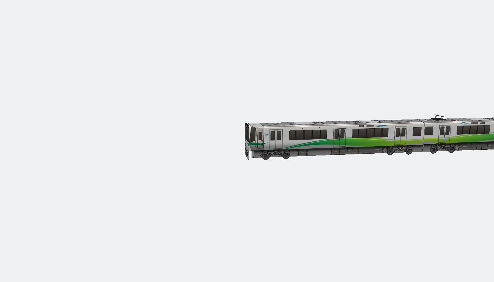
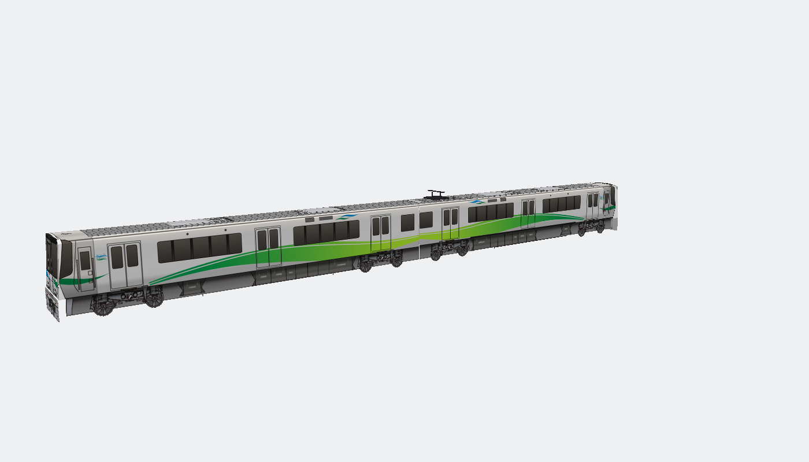
#12 aonami-1000 —— 端面方向反了（ms-1）
MC 原话：端面方向反了
根因：图纸端面片镜像印、司机端面抄反，两端显示反字。
修法：两端 front/frontf 各水平翻转一次；car1+car4。站内两端正确显示“01”＋正向“あおなみ線”。
推送：已推，提交 8ebb67b6（models-pipeline，一车一 commit；多 commit 的车见修法）
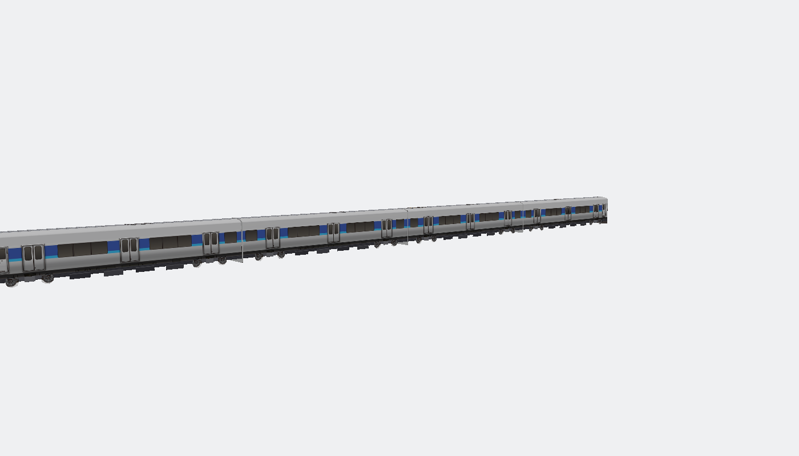

#20 eizan-800 —— 其他（ot-3）
MC 原话：其他：く车头
根因：纸模端盖是全平直竖板，く只画在侧面贴图里。
修法：两头 warp R=0.38；前脸绿/蓝带由单向斜线改对称 V；car1+car2。小遗憾：えいでん标志被 V 腿下缘轻压。
推送：已推，提交 ba13085a（models-pipeline，一车一 commit；多 commit 的车见修法）
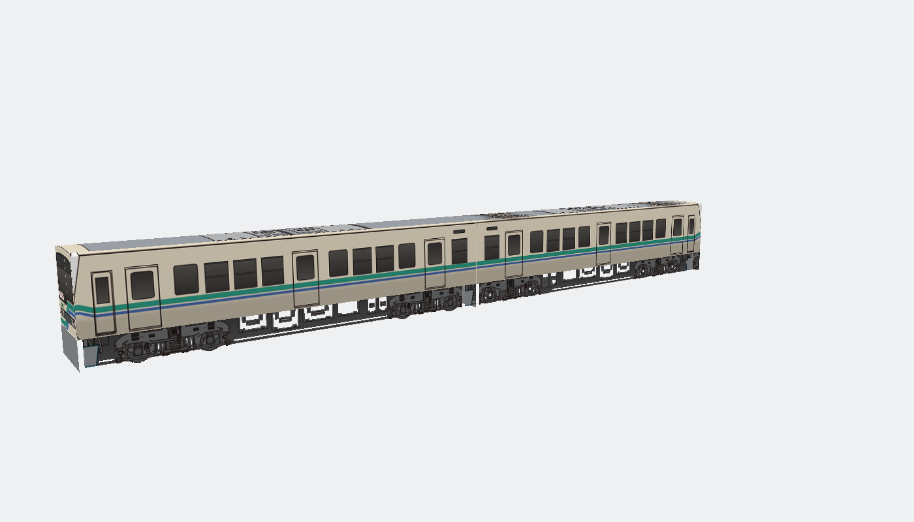

#26 fujikyu-8500 —— 其他（ot-6）
MC 原话：其他：司机是这个贴图 按照目前这个形态 就是这个形状是没问题的 但是然后上下颠倒一下
根因：司机室鼻部贴图上下颠倒（形态本身没问题）。
修法：car1 鼻部贴图上下翻转。
推送：已推，提交 f32c37b8（models-pipeline，一车一 commit；多 commit 的车见修法）
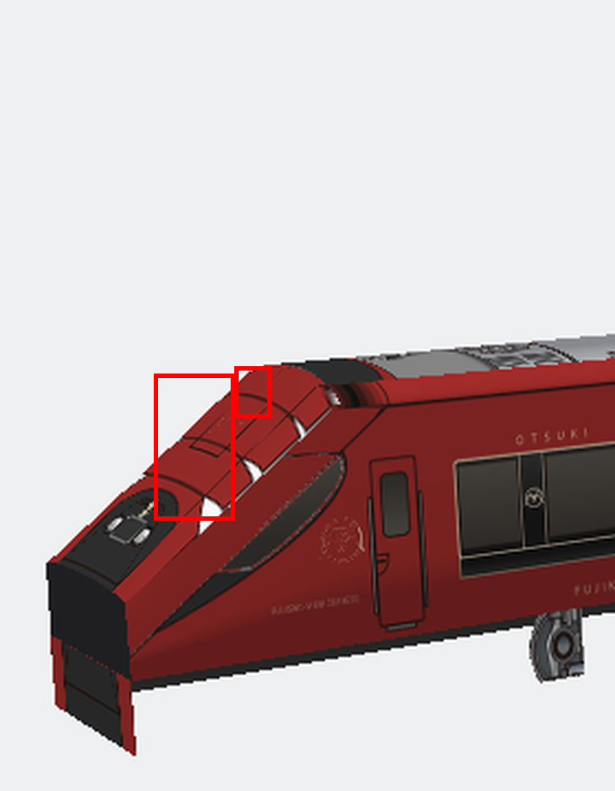

#28 fukushimakotu-1000 —— 贴图颠倒（tx-1）
MC 原话：贴图颠倒
根因：司机端面贴图上下颠倒，与实车照片的特征上下顺序相反。
修法：car1 front 与 car2 frontf 原位 v 翻转（v'=0.96-v）；裙板、end1、侧面不动。
推送：已推，提交 e069a25a（models-pipeline，一车一 commit；多 commit 的车见修法）
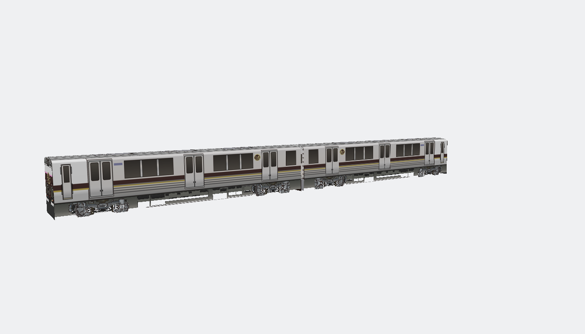

#34 hankai-701 —— 转向架问题（ms-1）
MC 原话：转向架问题
根因：转向架问题：转向架画两次＋车底白板，裙板印着转向架图案。
修法：裙板转向架图案清改素白、under 白底 flood-clear 透明 19,964 px；car1。
推送：已推，提交 e2d702af（models-pipeline，一车一 commit；多 commit 的车见修法）
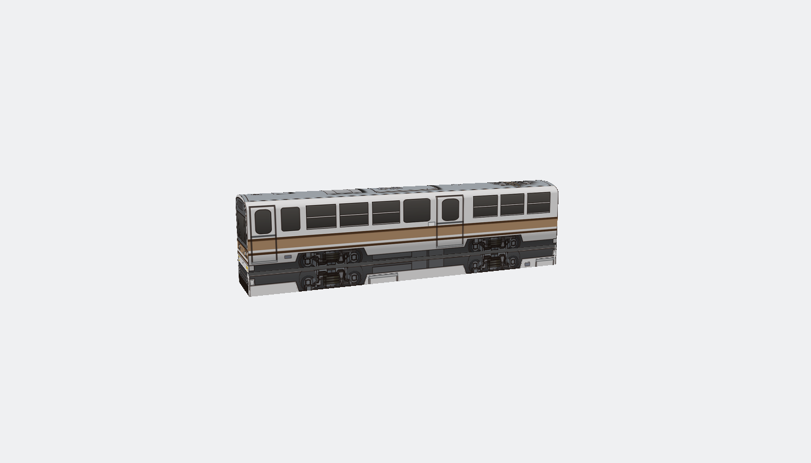

#42 hankyu-8200 —— 胶耳未清（ge-1）
MC 原话：胶耳未清
根因：端件裁切框把纸模粘贴耳（のりしろ）框进贴图，端盖 UV 拉满车宽后在司机面两侧形成通高白竖条；贴图问题，非几何。
修法：端件上下角白三角逐行填白，顶/底带 66%~89%→0~4%；car1+car2。
推送：已推，提交 ad9a570e（models-pipeline，一车一 commit；多 commit 的车见修法）
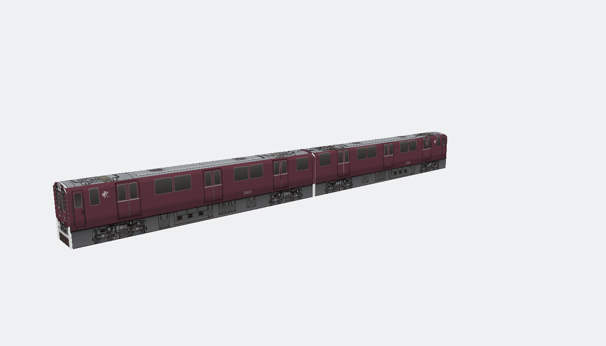

#44 hankyu-9300 —— 胶耳未清（ge-1）
MC 原话：胶耳未清
根因：端件裁切框把纸模粘贴耳（のりしろ）框进贴图，端盖 UV 拉满车宽后在司机面两侧形成通高白竖条；贴图问题，非几何。
修法：与 8200 同法（端件上下角白三角逐行填白）；car1+car2。
推送：已推，提交 91fae17b（models-pipeline，一车一 commit；多 commit 的车见修法）

#46 hansin-5001 —— 胶耳未清（ge-1）
MC 原话：胶耳未清
根因：端件裁切框把纸模粘贴耳（のりしろ）框进贴图，端盖 UV 拉满车宽后在司机面两侧形成通高白竖条；贴图问题，非几何。
修法：端件框横向收紧到端面轮廓、只取端面本身，裙板白纸残留同步清；手术式 GLB 补丁（原专员已推，本批核实未重做）。
推送：已推，提交 3ac80f1e（models-pipeline，一车一 commit；多 commit 的车见修法）
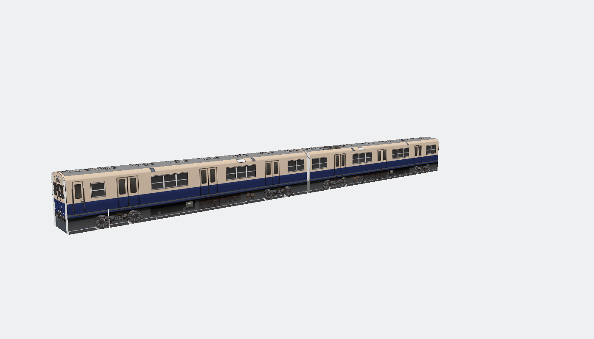

#48 hansin-5700 —— 胶耳未清（ge-1）
MC 原话：胶耳未清
根因：端件裁切框把纸模粘贴耳（のりしろ）框进贴图，端盖 UV 拉满车宽后在司机面两侧形成通高白竖条；贴图问题，非几何。
修法：端件框收紧，cab 179→130 px；car1-4。残留：贴图顶带余白为屋顶圆角白三角（穹顶裁切后不显）。
推送：已推，提交 2ca9cf99（models-pipeline，一车一 commit；多 commit 的车见修法）
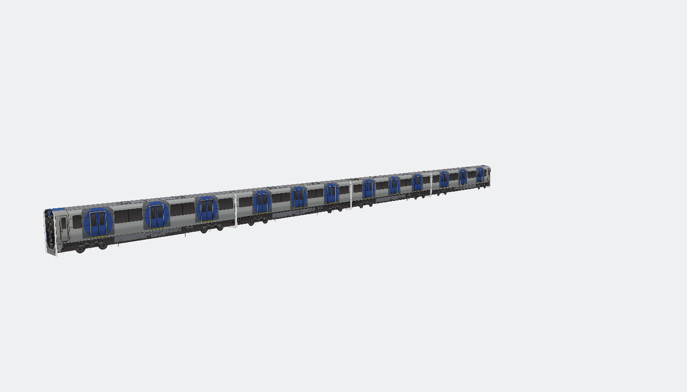

#50 hansin-9000 —— 胶耳未清（ge-1）
MC 原话：胶耳未清
根因：端件裁切框把纸模粘贴耳（のりしろ）框进贴图，端盖 UV 拉满车宽后在司机面两侧形成通高白竖条；贴图问题，非几何。
修法：端件框收紧；car1-3。残留：贴图顶带余白为屋顶圆角白三角（穹顶裁切后不显）。
推送：已推，提交 1c32f9d3（models-pipeline，一车一 commit；多 commit 的车见修法）
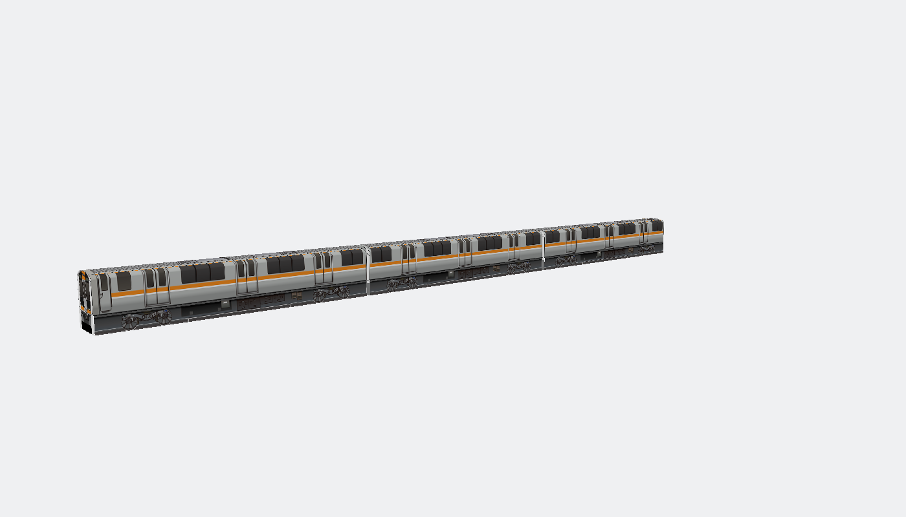

#59 hiroden-3900 —— 编组错误（fm-2）
MC 原话：编组错误
根因：编组错误：三辆车在模型里是 X 向横置，站内应为 Z 向编组。
修法：三辆 X 向车烘焙 +90° Y 旋转为 Z 向车；car1/2/3.glb + consist.json。
推送：已推，提交 52a7de7c（models-pipeline，一车一 commit；多 commit 的车见修法）
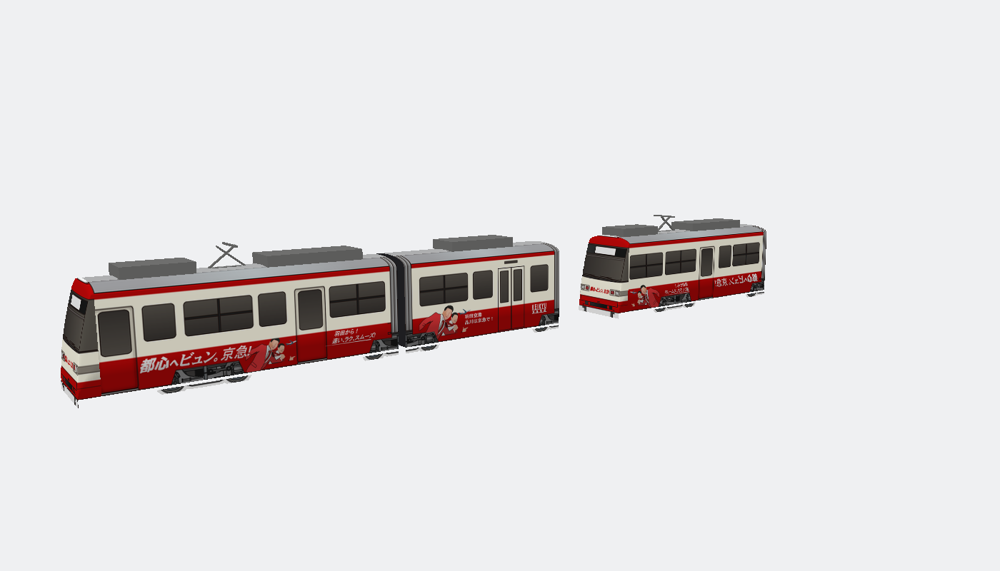

#68 hokuriku-7700 —— 贴图颠倒（tx-1）
MC 原话：贴图颠倒
根因：司机端面贴图上下颠倒，与实车照片的特征上下顺序相反。
修法：司机面 v'=1-v；裙板重映射至灰段；car2 裙板暗区棕→灰；car1+car2。
推送：已推，提交 7dd7084b（models-pipeline，一车一 commit；多 commit 的车见修法）
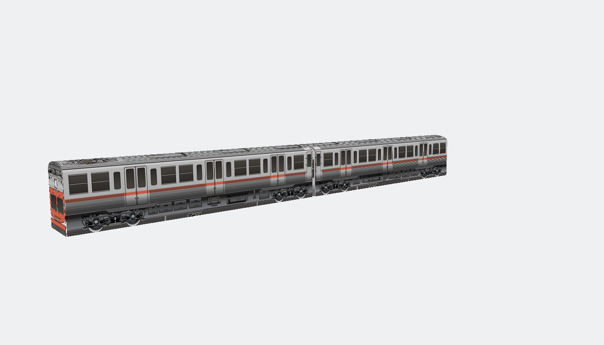
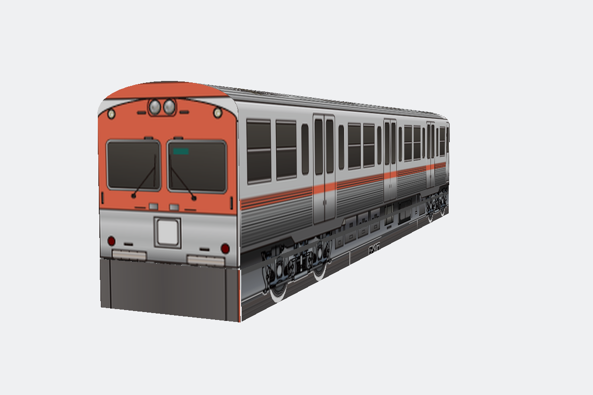
#69 hokuso-7300 —— 胶耳未清（ge-1）
MC 原话：胶耳未清
根因：端件裁切框把纸模粘贴耳（のりしろ）框进贴图，端盖 UV 拉满车宽后在司机面两侧形成通高白竖条；贴图问题，非几何。
修法：端件框横向收紧到端面轮廓、只取端面本身，裙板白纸残留同步清；手术式 GLB 补丁（原专员已推，本批核实未重做）。
推送：已推，提交 c83bc627（models-pipeline，一车一 commit；多 commit 的车见修法）
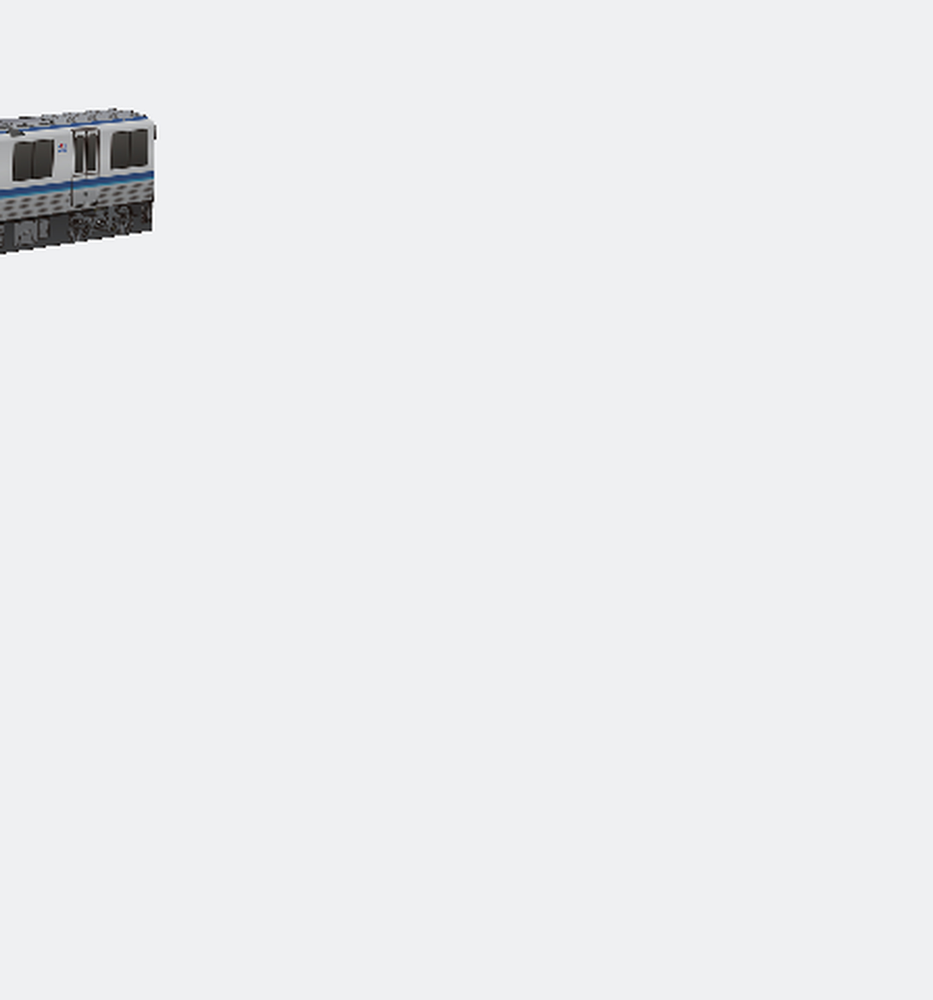

#71 hukuokasub-1000 —— 其他（ot-6）
MC 原话：其他：这个司机是这里面的贴图 怎么是黑的，是不是编组方向搞错了
根因：编组方向搞错：两端车司机端朝内、黑端朝外。
修法：car1+car6 各绕 Y 转 180°。
推送：已推，提交 794fe07d（models-pipeline，一车一 commit；多 commit 的车见修法）
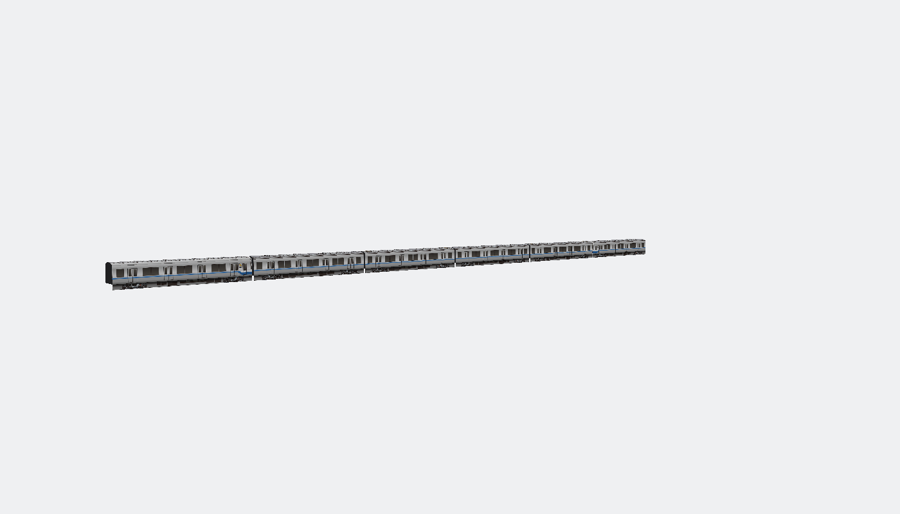

#73 hukuokasub-3000 —— 编组错误（fm-2）
MC 原话：编组错误
根因：编组错误：编组顺序不对。
修法：只改 consist.json 为 [car6,car5,car2,car1]；GLB 未动。
推送：已推，提交 192dbfe8（models-pipeline，一车一 commit；多 commit 的车见修法）
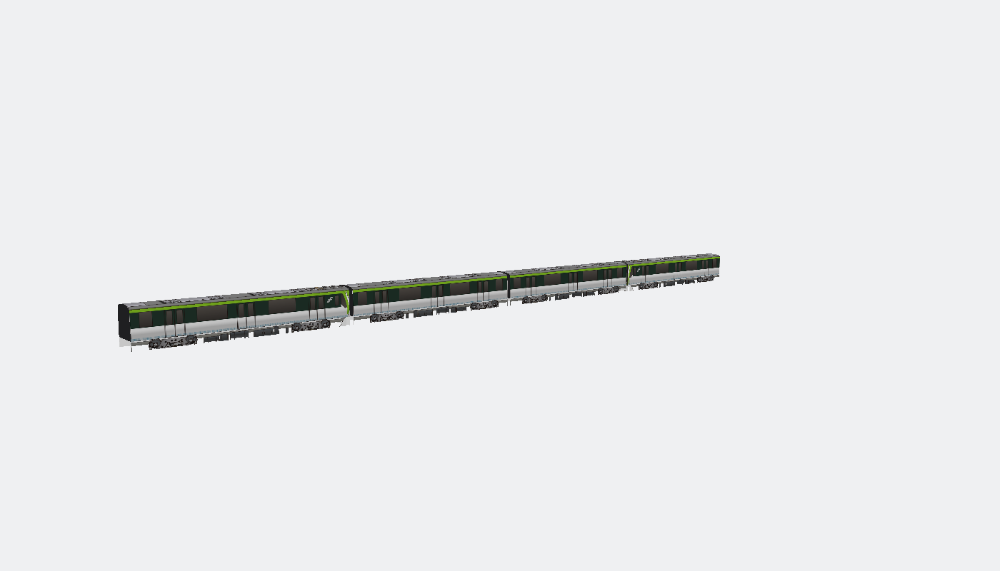

#77 iga-860 —— 胶耳未清（ge-1）
MC 原话：胶耳未清
根因：端件裁切框把纸模粘贴耳（のりしろ）框进贴图，端盖 UV 拉满车宽后在司机面两侧形成通高白竖条；贴图问题，非几何。
修法：端件框收紧，cab 248→179 px；car1+car2。
推送：已推，提交 2cf1f067（models-pipeline，一车一 commit；多 commit 的车见修法）
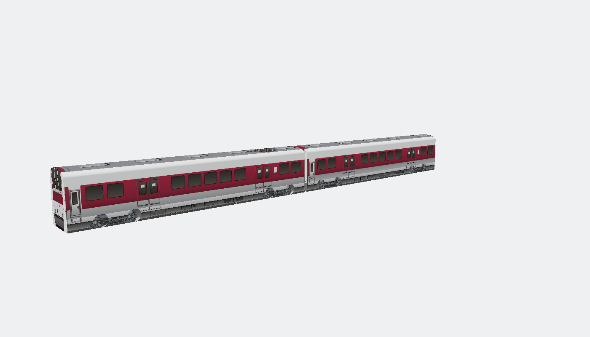

#79 irishikawa-ir521 —— 其他（ot-6）
MC 原话：其他：特殊 司机室那一面的贴图 它是く的形状贴在司机室端面绿色挂耳保持和车侧面一个平面
根因：司机室端面绿色挂耳应为く形折翼，与车侧面保持一个平面。
修法：car1+car2 侧面绿挂耳改浅蓝く形折翼。
推送：已推，提交 1d5ce171（models-pipeline，一车一 commit；多 commit 的车见修法）
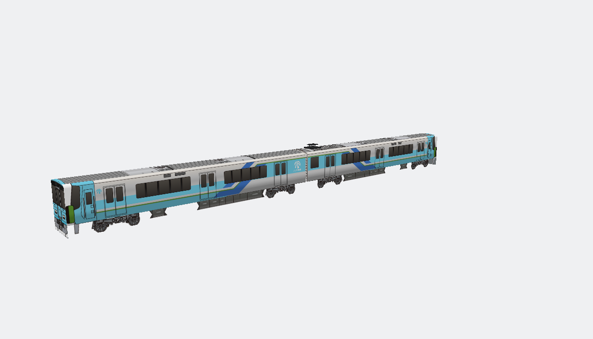

#86 iyotetu-3000 —— 其他（ot-3）
MC 原话：其他：く头型
根因：纸模端盖是全平直竖板，く只画在侧面贴图里。
修法：GLB 级 warp R=0.14；car1+car3。
推送：已推，提交 36fe4a88（models-pipeline，一车一 commit；多 commit 的车见修法）
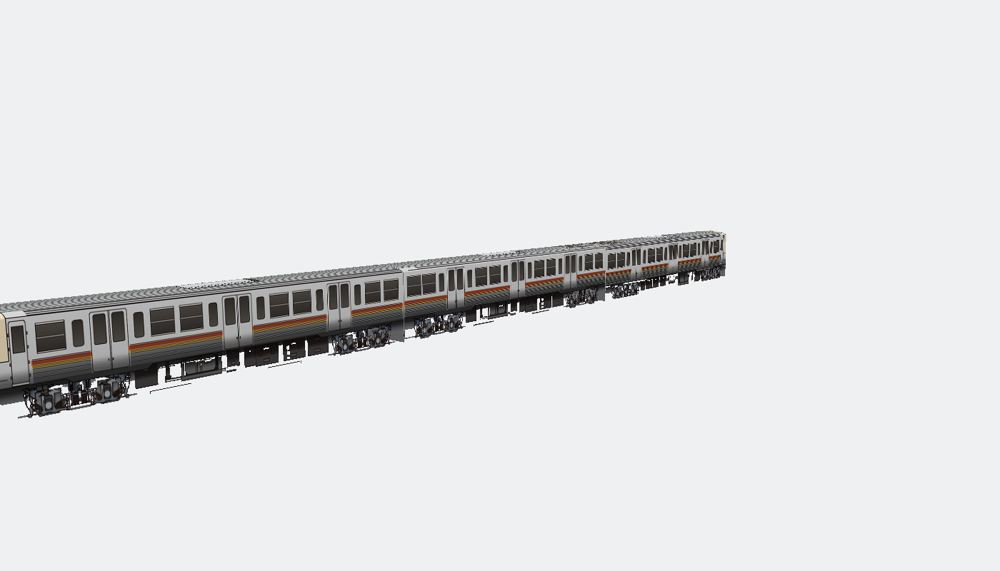

#90 izuhakone-7000 —— 其他（ot-3）
MC 原话：其他：く
根因：纸模端盖是全平直竖板，く只画在侧面贴图里。
修法：car1 warp R=0.21 + 中央凹 −0.18；car2 中间车未动。
推送：已推，提交 86a26a4e（models-pipeline，一车一 commit；多 commit 的车见修法）
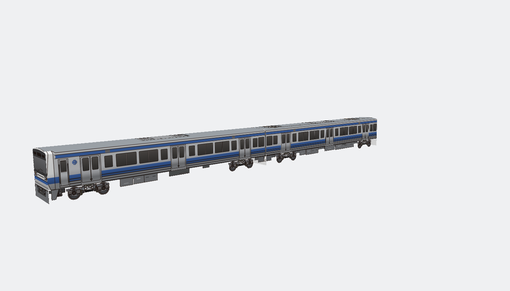
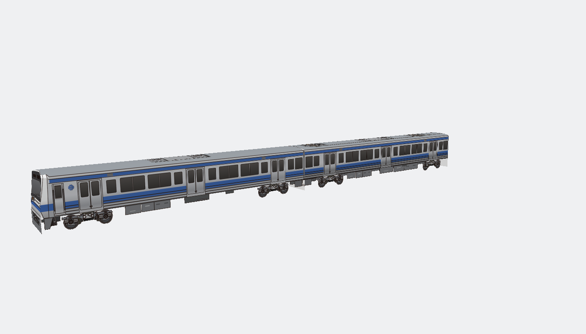
#91 jnr-155 —— 胶耳未清（ge-1）
MC 原话：胶耳未清
根因：端件裁切框把纸模粘贴耳（のりしろ）框进贴图，端盖 UV 拉满车宽后在司机面两侧形成通高白竖条；贴图问题，非几何。
修法：端件框收紧；car1-4。残留：贴图顶带余白为屋顶圆角白三角（穹顶裁切后不显）。
推送：已推，提交 60578f22（models-pipeline，一车一 commit；多 commit 的车见修法）

#93 jnr-kiha181 —— 胶耳未清（ge-2）
MC 原话：胶耳未清
根因：端件裁切框把纸模粘贴耳（のりしろ）框进贴图，端盖 UV 拉满车宽后在司机面两侧形成通高白竖条；贴图问题，非几何。
修法：端件框收紧，司机面 176→133 px；car1。
推送：已推，提交 c76c5734（models-pipeline，一车一 commit；多 commit 的车见修法）
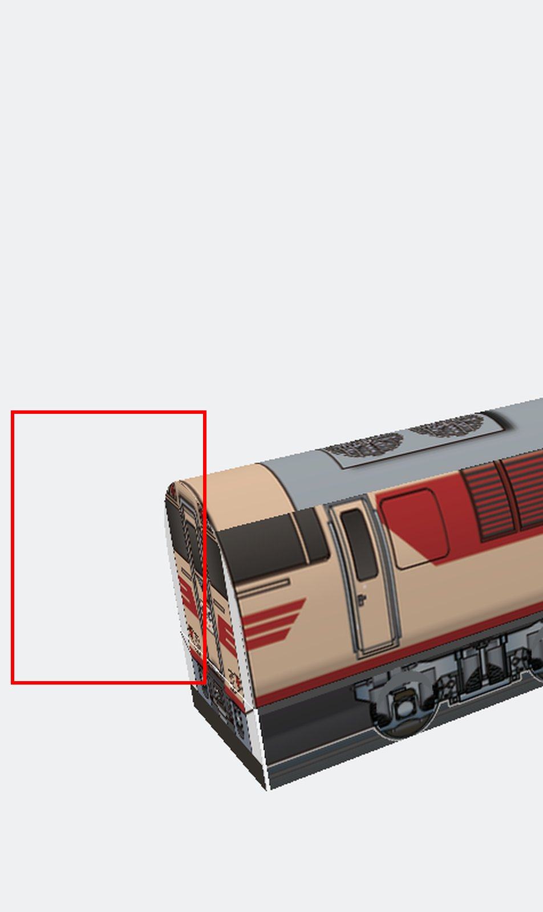

#94 jnr-kiha58 —— 胶耳未清（ge-2）
MC 原话：胶耳未清
根因：端件裁切框把纸模粘贴耳（のりしろ）框进贴图，端盖 UV 拉满车宽后在司机面两侧形成通高白竖条；贴图问题，非几何。
修法：米色耳（201）用折线暗线定位，端件框收紧；裙板填 2686 px；car1。
推送：已推，提交 bdca7d7a（models-pipeline，一车一 commit；多 commit 的车见修法）
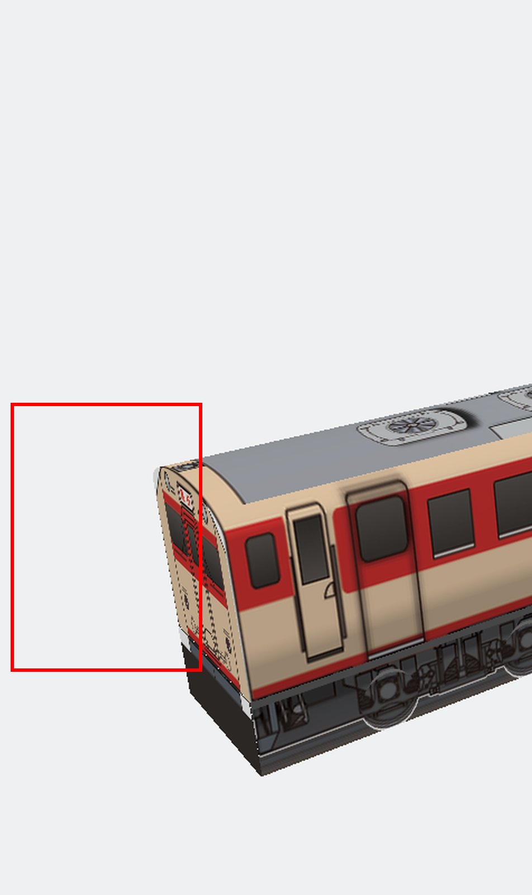

#99 jr-east-165 —— 胶耳未清（ge-2）
MC 原话：胶耳未清
根因：端件裁切框把纸模粘贴耳（のりしろ）框进贴图，端盖 UV 拉满车宽后在司机面两侧形成通高白竖条；贴图问题，非几何。
修法：端件框收紧，司机面 186→139 px；贯通端按墙裁（非门宽）；car1+car2。
推送：已推，提交 553c6be8（models-pipeline，一车一 commit；多 commit 的车见修法）
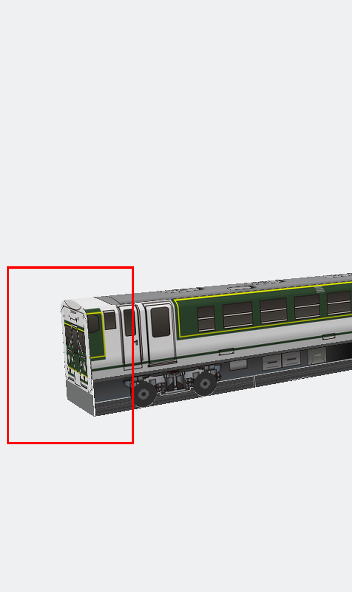

#100 jr-east-183 —— 贴图颠倒（tx-1）
MC 原话：贴图颠倒
根因：司机端面贴图上下颠倒，与实车照片的特征上下顺序相反。
修法：car1+car2 front 原位 v 翻转。残留：绿块翻后细绿带与侧面不对齐（图纸局限）。
推送：已推，提交 15ffd5dd（models-pipeline，一车一 commit；多 commit 的车见修法）
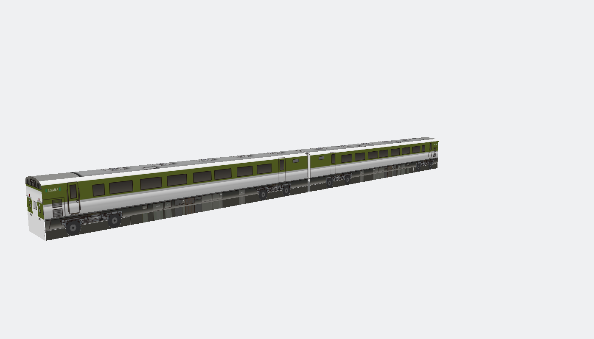
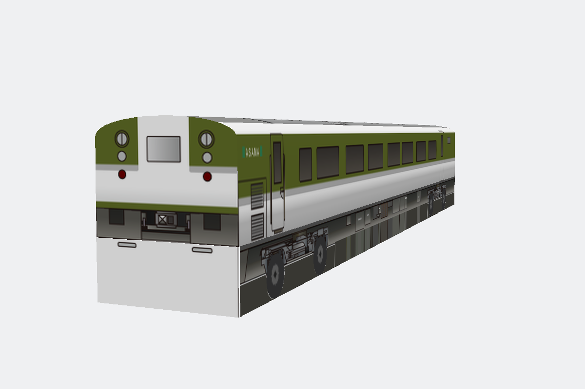
#101 jr-east-251 —— 编组错误（fm-2）
MC 原话：编组错误
根因：编组错误：实车 5 辆，模型只有 4 辆，缺クロ250 端车。
修法：新建 car5（クハ251 不翻转充当クロ250 端），编组 [car5,car1,car2,car3,car4]，car_length_m 20.0→20.5。已知不完美：car5 无绿车标、车门有窗。
推送：已推，提交 c2c3a738（models-pipeline，一车一 commit；多 commit 的车见修法）
#102 jr-east-255 —— 编组错误（fm-2）
MC 原话：编组错误
根因：编组错误：实车 3 辆，模型只有 2 辆，缺クハ254 端车。
修法：新建 car3（クハ255 充当クハ254 端），编组 [car3,car1,car2]，长度字段纠正 20.5→21.0 / 21.0→20.5。已知不完美：car3 有 2 扇门（实车 1 扇）。
推送：已推，提交 e5f6e980（models-pipeline，一车一 commit；多 commit 的车见修法）
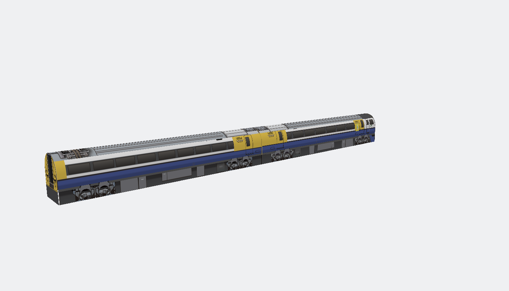

#103 jr-east-415 —— 胶耳未清（ge-2）
MC 原话：胶耳未清
根因：端件裁切框把纸模粘贴耳（のりしろ）框进贴图，端盖 UV 拉满车宽后在司机面两侧形成通高白竖条；贴图问题，非几何。
修法：端件框收紧，6 端件 160–182→135–139 px；car1-4。
推送：已推，提交 d02aa8a4（models-pipeline，一车一 commit；多 commit 的车见修法）
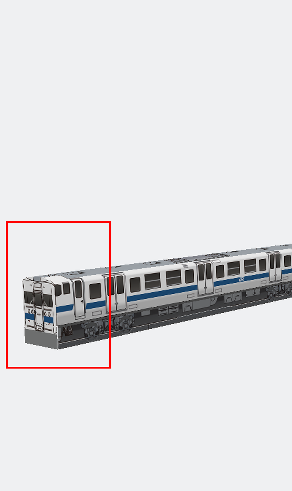

#105 jr-east-485 —— 贴图颠倒（tx-1）
MC 原话：贴图颠倒
根因：正面本就对，只有两颗红点位置错（不在车灯下方）。
修法：不翻面、两颗红点像素搬移到车灯下方，涂装未动；car1+car2。未找到平头“白鳥”正面照，定案依据 189 系顺序。
推送：已推，提交 192bac48（models-pipeline，一车一 commit；多 commit 的车见修法）
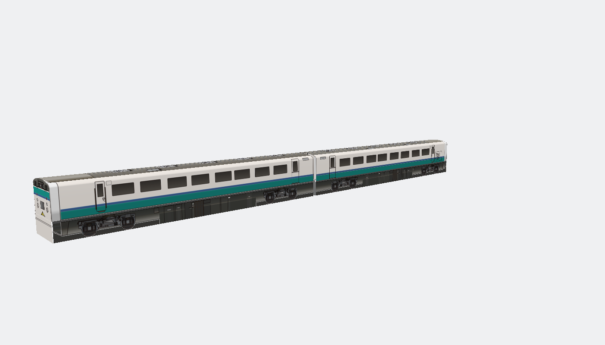

#107 jr-east-719 —— 胶耳未清（ge-2）
MC 原话：胶耳未清
根因：端件裁切框把纸模粘贴耳（のりしろ）框进贴图，端盖 UV 拉满车宽后在司机面两侧形成通高白竖条；贴图问题，非几何。
修法：端件框收紧，4 端件 236–239→177–179 px；裙板填 2305 px；car1+car2。
推送：已推，提交 a7200dbd（models-pipeline，一车一 commit；多 commit 的车见修法）
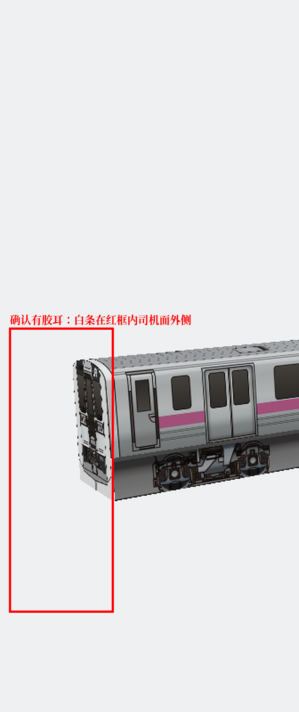

#111 jr-east-e131 —— 胶耳未清（ge-2）
MC 原话：胶耳未清
根因：(B) 批只填银灰（196）与黑司机面反差仍大，胶耳视觉未除。
修法：二次返工：收紧框 205→136 px，两侧带 196→82/90；car1+car2。
推送：已推，提交 6ebac32d（models-pipeline，一车一 commit；多 commit 的车见修法）
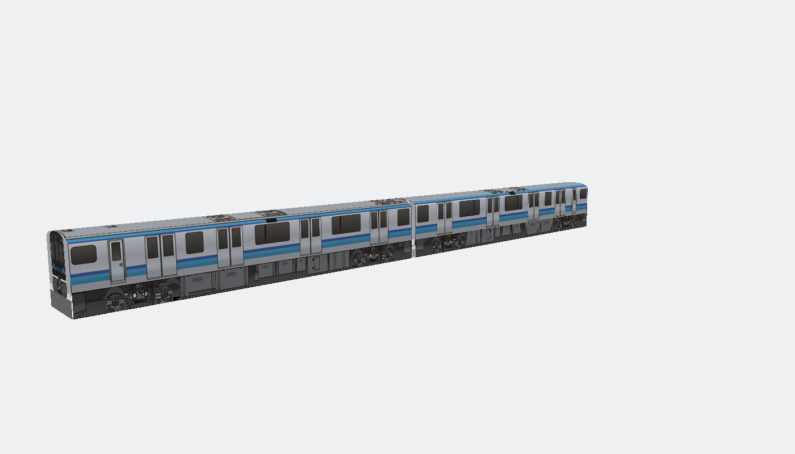

#112 jr-east-e233-5000 —— 胶耳未清（ge-2）
MC 原话：胶耳未清
根因：端件裁切框把纸模粘贴耳（のりしろ）框进贴图，端盖 UV 拉满车宽后在司机面两侧形成通高白竖条；贴图问题，非几何。
修法：端件框收紧，6 端件 189–190→135–143 px；裙板填 16784 px；car1-4。
推送：已推，提交 d37a22fe（models-pipeline，一车一 commit；多 commit 的车见修法）
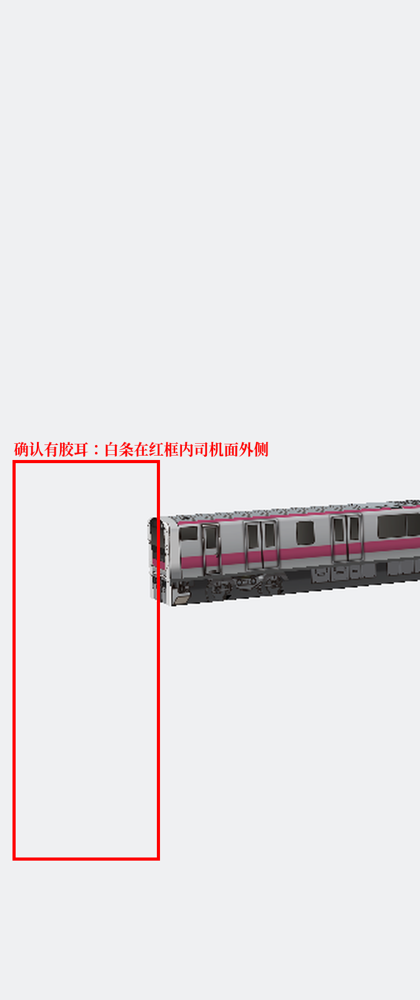

#113 jr-east-e253-1000 —— 贴图颠倒（tx-1）
MC 原话：贴图颠倒
根因：司机端面贴图上下颠倒，与实车照片的特征上下顺序相反。
修法：car1 车顶设备带填红 + front 原位 v 翻转；car2 无司机面。残留：面右缘一小黑楔。
推送：已推，提交 4caf2f5c（models-pipeline，一车一 commit；多 commit 的车见修法）
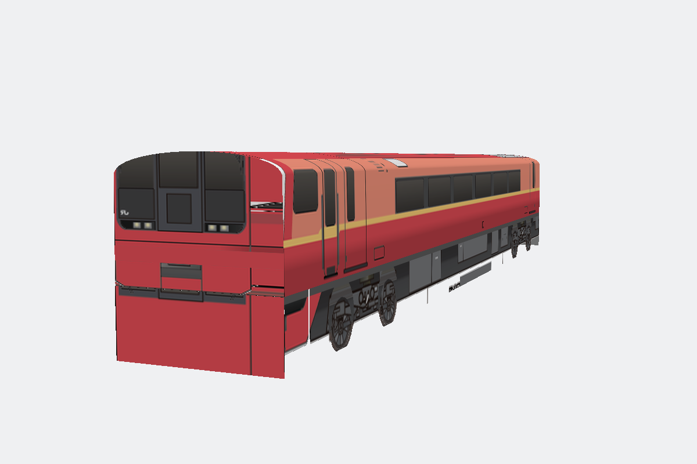
#114 jr-east-e261 —— 编组错误（fm-3）
MC 原话：编组错误
根因：编组错误：图纸仅 2 辆，实车 8 辆；缺的 6 辆（含另一先头车クロE261 与餐车サシE261）车型不同、无图，car2 最可能是 7 号車モロE261-200（存疑）。
修法：不硬凑（见未推原因）。
推送：未推——未推：无图缺车——图纸仅 2 辆，实车 8 辆；缺的 6 辆（含另一先头车クロE261 与餐车サシE261）车型不同、无图，镜像硬拼属伪造，不硬凑。

#123 jr-east-hbe300 —— 其他（ot-5）
MC 原话：其他：他这个头型是有点楔形的那一种 而且编组也不太对
根因：头型是楔形的那一种，而且编组也不对（实车 4 辆、模型 2 辆）。
修法：2 辆→4 辆编组 [car1,car2,car3,car4]，两端楔形鼻；car1+car3+car4+consist.json（car2 与 car3 字节相同，car3 复用既有中间车 GLB）。
推送：已推，提交 f90e538b（models-pipeline，一车一 commit；多 commit 的车见修法）
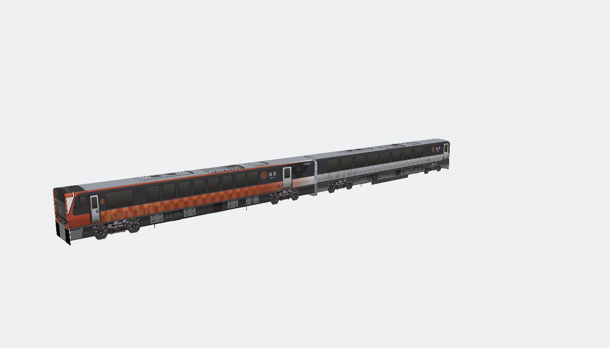
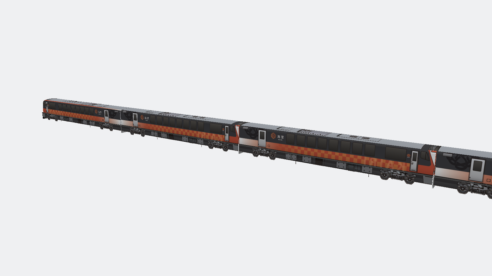
#130 jr-hokkaido-721 —— 胶耳未清（ge-3）
MC 原话：胶耳未清
根因：端件裁切框把纸模粘贴耳（のりしろ）框进贴图，端盖 UV 拉满车宽后在司机面两侧形成通高白竖条；贴图问题，非几何。
修法：端件框收紧，cab 224→180、gang 230→179 px；car1/2/3。
推送：已推，提交 7e1f225a（models-pipeline，一车一 commit；多 commit 的车见修法）
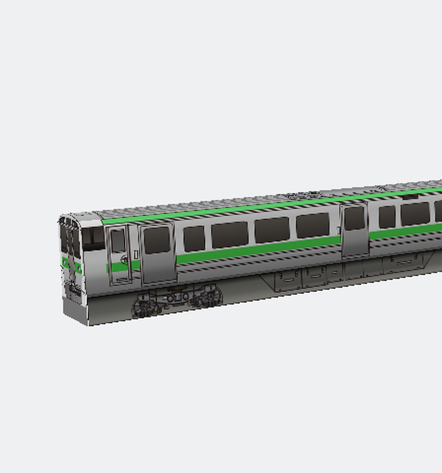

#134 jr-hokkaido-737 —— 其他（ot-1）
MC 原话：其他：这个看不清 再检查一下
根因：前脸看不清，粉竖条待查。
修法：car1 前脸裁切框右移、粉竖条清零。
推送：已推，提交 9d167b7b（models-pipeline，一车一 commit；多 commit 的车见修法）
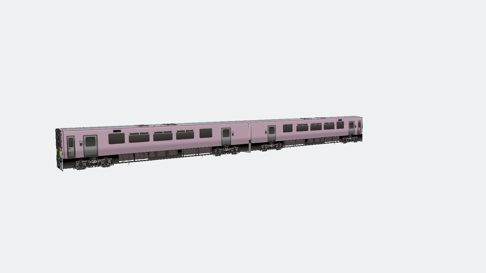

#135 jr-hokkaido-785 —— 贴图颠倒（tx-1）
MC 原话：贴图颠倒
根因：正面本就对，只 cab 裙板倒了。
修法：不翻 front、只翻 cab 裙板；car1+car2。
推送：已推，提交 5961c274（models-pipeline，一车一 commit；多 commit 的车见修法）
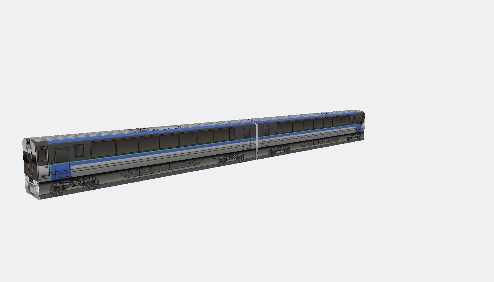

#137 jr-hokkaido-h100 —— 贴图颠倒（tx-1）
MC 原话：贴图颠倒
根因：正面本就对，左侧壁 DECMO 文字段镜像了。
修法：不翻 front、左侧壁 DECMO 文字段原位 u 镜像；car1。残留：文字段内绿带斜纹小段略有不连续。
推送：已推，提交 84202a8e（models-pipeline，一车一 commit；多 commit 的车见修法）
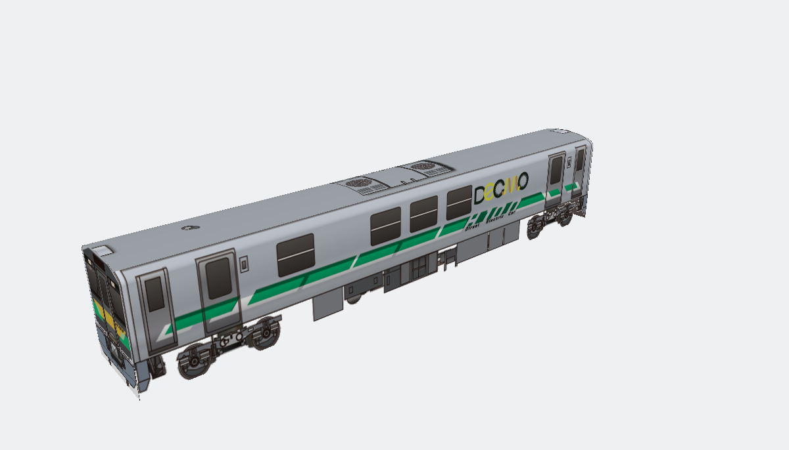
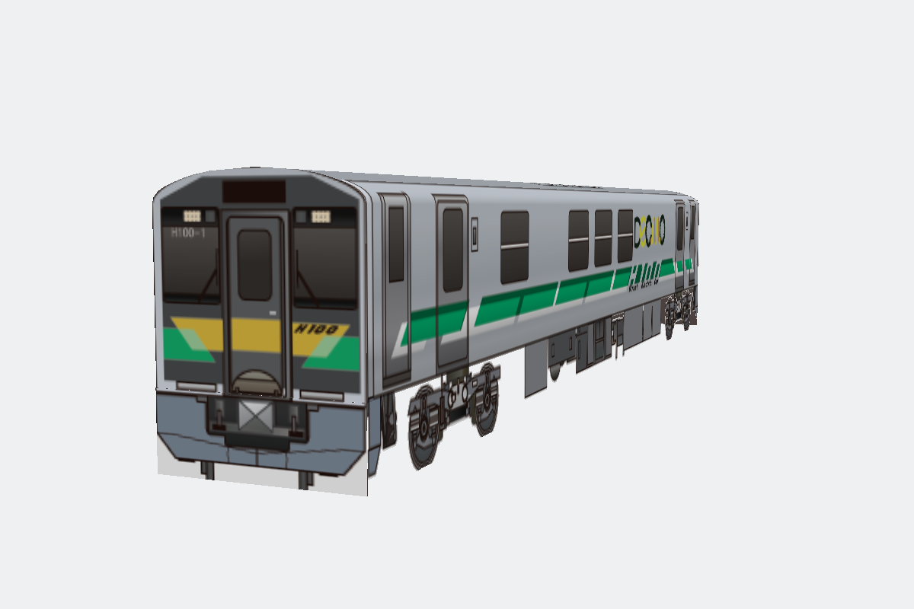
#140 jr-hokkaido-kiha183 —— 其他（ot-6）
MC 原话：其他：头型不对参考 jr-hokkaido-789，编组也不对
根因：头型不对（参考 jr-hokkaido-789），编组也不对；缺キロ182-0 绿车（无图，不补）。
修法：car1 按 789 R1 里折重建。编组仍 3 辆，缺キロ182-0 绿车待取得图纸（试验涂装）后再补。
推送：已推，提交 ff7dd150（models-pipeline，一车一 commit；多 commit 的车见修法）
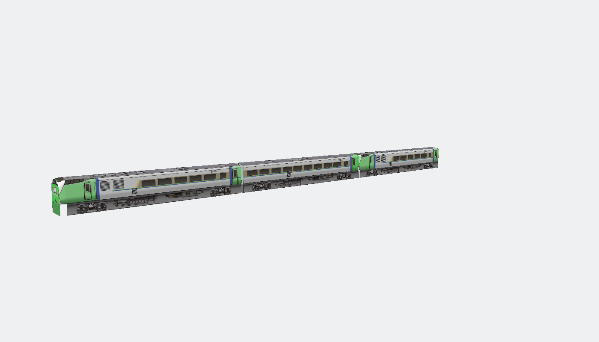
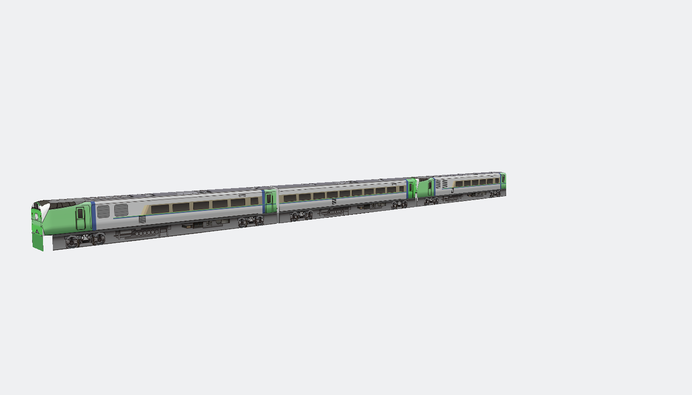
#141 jr-hokkaido-kiha201 —— 贴图颠倒（tx-2）
MC 原话：贴图颠倒
根因：司机端面贴图上下颠倒，与实车照片的特征上下顺序相反。
修法：司机端面翻正；car1+car3。
推送：已推，提交 743540c2（models-pipeline，一车一 commit；多 commit 的车见修法）
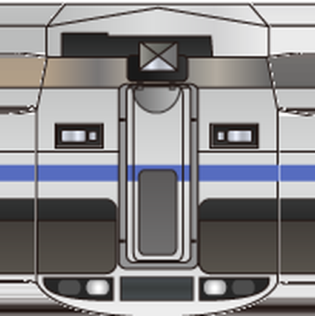
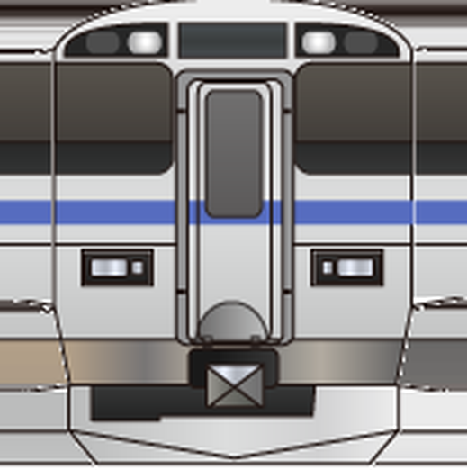
#142 jr-hokkaido-kiha261 —— 编组错误（fm-261）
MC 原话：编组错误
根因：编组错误：第二辆是中间车，两头应都有驾驶室（(b) 方案）。
修法：car2 按第 1 页重建为司机车，编组 [car2,car1] 两头驾驶室；双口径验证通过，三张用户图边距全过。另含根 tree 修复 bf39000（7c33bc8b 根 tree 事故后恢复 31 个条目）。
推送：已推，提交 7c33bc8b、bf39000（models-pipeline，一车一 commit；多 commit 的车见修法）
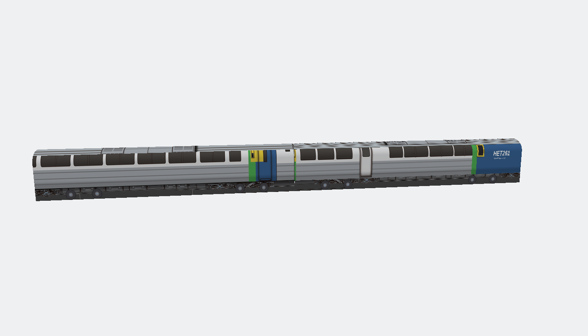
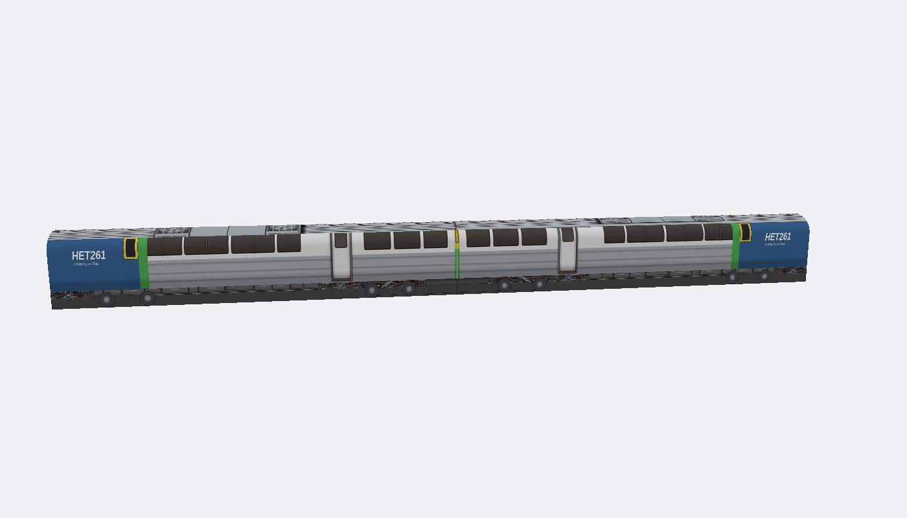
#143 jr-hokkaido-kiha283 —— 其他（ot-2）
MC 原话：其他：重做
根因：删了重建；原编组顺序在站内是错的——两端外侧都是贯通端/平板端、司机面在中间接缝处面对面。
修法：删后重建（删 8b043261 → 重建 d2896074），consist 只倒序为 [car3,car2,car1]，GLB 不动；站内模拟验证两端外侧均为司机面、中间接缝贯通端相对。
推送：已推，提交 d2896074（models-pipeline，一车一 commit；多 commit 的车见修法）
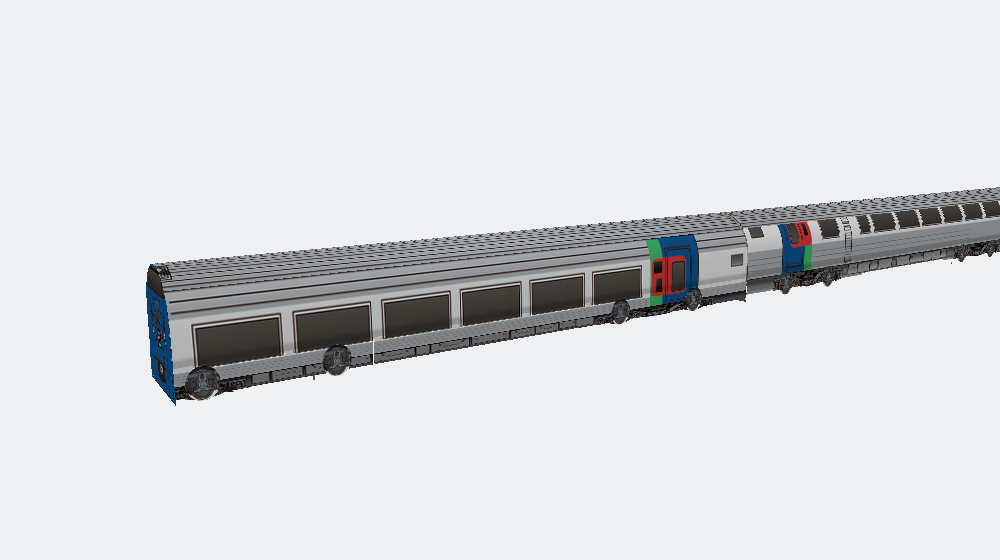

#147 jr-kyusyu-303 —— 其他（ot-3）
MC 原话：其他：く
根因：纸模端盖是全平直竖板，く只画在侧面贴图里。
修法：car1 warp R=0.15 + car3 由中间车重建成 Tc，车号“303”→“302”。小遗憾：小铭牌小号仍读“303”（主车号“302”正确）。
推送：已推，提交 af10d2d8（models-pipeline，一车一 commit；多 commit 的车见修法）
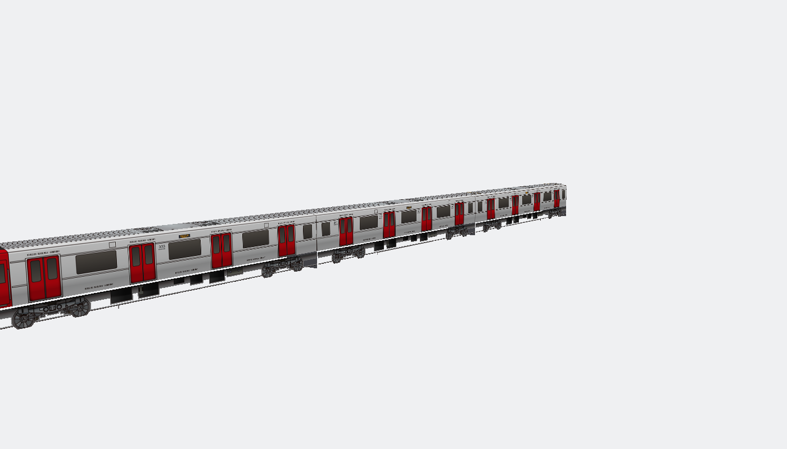
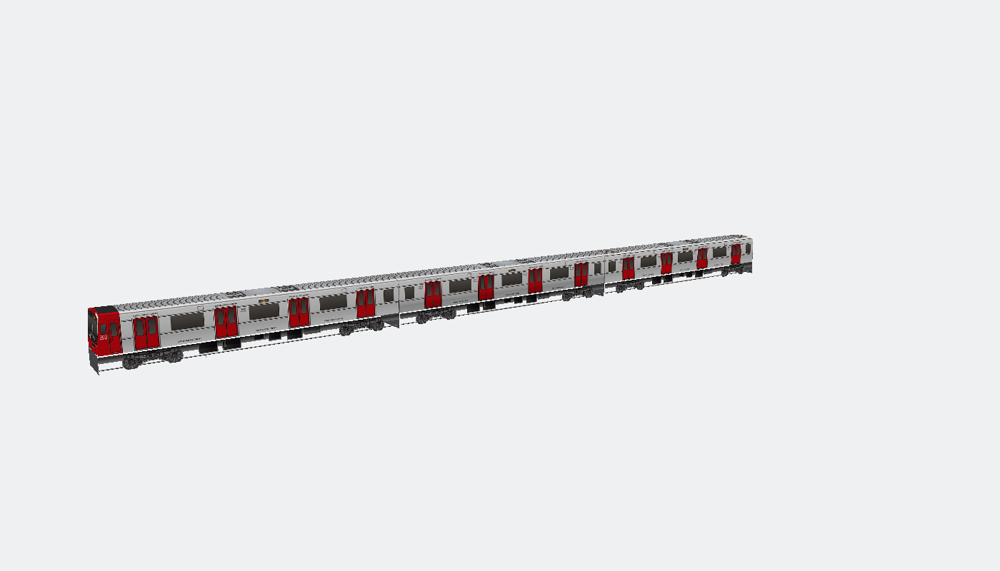
#150 jr-kyusyu-783 —— 其他（ot-2）
MC 原话：其他：删了重做
根因：删了重做：镂空车底＋去车顶空调；原编组顺序错（司机面在中间接缝处面对面）。
修法：删后重建（删 ed545e03 → 重建 0f1da846），consist 只倒序为 [car2,car1]，GLB 不动。⚠️ 黑风挡缺失待 MC 定夺（见页顶特别说明）。
推送：已推，提交 0f1da846（models-pipeline，一车一 commit；多 commit 的车见修法）
⚠️ 黑风挡缺失（待 MC 定夺，见页顶特别说明）：实车司机面是黑色全景风挡，但 Vayashi 原图 net 里没有黑风挡司机面件，按 skill“贴图必须是图纸的像素、不要重画”无法变出；本次返工范围（镂空车底＋去车顶空调）已修完并推上。
#152 jr-kyusyu-811 —— 其他（ot-6）
MC 原话：其他：贴图再调整一下司机是这一面的贴图往上面放一点
根因：司机室那一面的贴图往上面放一点。
修法：car1 front + car3 end1 司机面贴图上移约 0.15 m。
推送：已推，提交 4879fc2c（models-pipeline，一车一 commit；多 commit 的车见修法）
#153 jr-kyusyu-815 —— 贴图颠倒（tx-2）
MC 原话：贴图颠倒
根因：司机端面贴图上下颠倒，与实车照片的特征上下顺序相反。
修法：“518”翻回正立（未改 815）；car1+car2。
推送：已推，提交 2df3315a（models-pipeline，一车一 commit；多 commit 的车见修法）

#154 jr-kyusyu-817 —— 胶耳未清（ge-3）
MC 原话：胶耳未清
根因：端件裁切框把纸模粘贴耳（のりしろ）框进贴图，端盖 UV 拉满车宽后在司机面两侧形成通高白竖条；贴图问题，非几何。
修法：手术贴图重裁；car1/2。
推送：已推，提交 6d38151c（models-pipeline，一车一 commit；多 commit 的车见修法）
#156 jr-kyusyu-883 —— 贴图颠倒（tx-2）
MC 原话：贴图颠倒
根因：司机端面贴图上下颠倒，与实车照片的特征上下顺序相反。
修法：司机端面翻正；car1+car2（car2 侧面“sonic”镜像字顺手修）。
推送：已推，提交 71f7a214（models-pipeline，一车一 commit；多 commit 的车见修法）
#158 jr-kyusyu-bec819 —— 贴图颠倒（tx-2）
MC 原话：贴图颠倒
根因：司机端面贴图上下颠倒，与实车照片的特征上下顺序相反。
修法：司机端面翻正；car1+car2。
推送：已推，提交 b1342f32（models-pipeline，一车一 commit；多 commit 的车见修法）

#165 jr-kyusyu-kiha40 —— 转向架问题（ms-1）
MC 原话：转向架问题
根因：转向架问题：4 个平板灰圆片盖车轮＋后转向架偏出 0.88 m。
修法：前转向架换 0.86 m 真轮、后转向架移到规格位（心盘距 14.40 m）；car1。已知轻微偏差：前转向架右缘 4 px 白线（已收窄，正侧面不可见）；全长 20.8 m vs 实车 21,300 mm 不在本次范围。
推送：已推，提交 6d6823fe（models-pipeline，一车一 commit；多 commit 的车见修法）

#167 jr-kyusyu-kiha71 —— 编组错误（fm-3）
MC 原话：编组错误
根因：编组错误：实车 4 辆，模型只有 2 辆。
修法：补成实车 4 辆 [71-1][70-2][70-1][71-2]；只改 car3.glb、car4.glb、consist.json（car1/car2 与已推逐字节一致未重推）。
推送：已推，提交 d8ced44a（models-pipeline，一车一 commit；多 commit 的车见修法）

#168 jr-kyusyu-kiha72 —— 其他（ot-6）
MC 原话：其他：设计师贴图好像不太对 上下颠倒了 而且编组有问题
根因：设计师贴图上下颠倒了，而且编组有问题；缺キサハ72 4 与キハ72 5（无图，不补）。
修法：car2 侧面 3 处镜像“2”字框翻回正立。编组仍 3 辆，缺キサハ72 4 与キハ72 5 待取得图纸后再补。
推送：已推，提交 eeb0f772（models-pipeline，一车一 commit；多 commit 的车见修法）

#169 jr-kyusyu-yc1 —— 胶耳未清（ge-3）
MC 原话：胶耳未清
根因：端件裁切框把纸模粘贴耳（のりしろ）框进贴图，端盖 UV 拉满车宽后在司机面两侧形成通高白竖条；贴图问题，非几何。
修法：端件框收紧，四框 181→132/133 px；car1/2。脸缘白色圆点边框是设计涂装，已保留。
推送：已推，提交 e7c28a05（models-pipeline，一车一 commit；多 commit 的车见修法）

#171 jr-shikoku-1200 —— 胶耳未清（ge-3）
MC 原话：胶耳未清
根因：端件裁切框把纸模粘贴耳（のりしろ）框进贴图，端盖 UV 拉满车宽后在司机面两侧形成通高白竖条；贴图问题，非几何。
修法：端件框收紧，170→135 px；car1。
推送：已推，提交 707bf8b2（models-pipeline，一车一 commit；多 commit 的车见修法）

#173 jr-shikoku-2000 —— 其他（ot-5）
MC 原话：其他：这个车是楔形的而且司机是的图上下颠倒了
根因：这个车是楔形的，而且司机室的图上下颠倒了。
修法：car1 正脸翻正 + 两端楔形鼻；car1+car3（car2 对照车不推）。
推送：已推，提交 2525c72a（models-pipeline，一车一 commit；多 commit 的车见修法）

#180 jr-shikoku-8000 —— 其他（ot-7）
MC 原话：其他：头型和贴图都有点问题
根因：头型和贴图都有点问题。
修法：car1 前脸重排＋流线鼻锥 3.0 m/顶 2.90 m；car3 8400 不动。
推送：已推，提交 c0ce32d7（models-pipeline，一车一 commit；多 commit 的车见修法）

#183 jr-shikoku-kiha32 —— 胶耳未清（ge-3）
MC 原话：胶耳未清
根因：端件裁切框把纸模粘贴耳（のりしろ）框进贴图，端盖 UV 拉满车宽后在司机面两侧形成通高白竖条；贴图问题，非几何。
修法：端件框收紧，176→137 px；car1。
推送：已推，提交 89c048b3（models-pipeline，一车一 commit；多 commit 的车见修法）
#185 jr-tokai-117 —— 其他（ot-7）
MC 原话：其他：注意车头头型贴图上下颠倒
根因：车头头型贴图上下颠倒（风挡带雨刮）。
修法：car1+car4 只翻风挡带雨刮 Λ→V。
推送：已推，提交 b49bd614（models-pipeline，一车一 commit；多 commit 的车见修法）

#188 jr-tokai-371 —— 其他（ot-1）
MC 原话：其他：看不清等会在审核
根因：看不清，等会再审核：鼻锥黑块＋裙板待查。
修法：car1（af1dacc6）+ car7（bba999cb）：鼻锥黑块改白、裙板改白。
推送：已推，提交 af1dacc6、bba999cb（models-pipeline，一车一 commit；多 commit 的车见修法）

#189 jr-tokai-373 —— 胶耳未清（ge-3）
MC 原话：胶耳未清
根因：端件裁切框把纸模粘贴耳（のりしろ）框进贴图，端盖 UV 拉满车宽后在司机面两侧形成通高白竖条；贴图问题，非几何。
修法：端件框收紧，cab 163→129、gang 163→122 px；car1/2（c1/c2 共用同一组端件框，已两车同修）。
推送：已推，提交 99d4305e（models-pipeline，一车一 commit；多 commit 的车见修法）
#190 jr-tokai-383 —— 胶耳未清（ge-3）
MC 原话：胶耳未清
根因：端件裁切框把纸模粘贴耳（のりしろ）框进贴图，端盖 UV 拉满车宽后在司机面两侧形成通高白竖条；贴图问题，非几何。
修法：端件框收紧，cab 205→128/129、gang 148→82 px；car1/2。
推送：已推，提交 385935b7（models-pipeline，一车一 commit；多 commit 的车见修法）

#195 jr-tokai-kiya95 —— 贴图颠倒（tx-2）
MC 原话：贴图颠倒
根因：司机端面贴图上下颠倒，与实车照片的特征上下顺序相反。
修法：司机端面翻正；car1+car2。
推送：已推，提交 9748a4c7（models-pipeline，一车一 commit；多 commit 的车见修法）
#196 jr-tokai-kiya97 —— 其他（ot-2）
MC 原话：其他：删掉重做
根因：删掉重做；原编组顺序错（司机面在中间接缝处面对面）。
修法：删后重建（删 b7ad004e → 重建 3496094d，即当前远端 HEAD），consist 只倒序为 [car2,car1]，GLB 不动。
推送：已推，提交 3496094d（models-pipeline，一车一 commit；多 commit 的车见修法）

#197 jr-west-105 —— 贴图颠倒（tx-2）
MC 原话：贴图颠倒
根因：司机端面贴图上下颠倒，与实车照片的特征上下顺序相反。
修法：司机端面翻正，涂装未动；car1+car2。
推送：已推，提交 0bad8253（models-pipeline，一车一 commit；多 commit 的车见修法）

#210 jr-west-381 —— 其他（ot-1）
MC 原话：其他：司机是贴图 再检查一下怎么可能没窗呢
根因：司机室是贴图，再检查一下怎么可能没窗呢——图纸漏画风挡。
修法：car1（20ca7fdf）+ car4（416ce548）端面重组：按实车补两扇风挡＋V＋行先表示＋车灯。
推送：已推，提交 20ca7fdf、416ce548（models-pipeline，一车一 commit；多 commit 的车见修法）
#211 jr-west-521 —— 胶耳未清（ge-4）
MC 原话：胶耳未清
根因：端件裁切框把纸模粘贴耳（のりしろ）框进贴图，端盖 UV 拉满车宽后在司机面两侧形成通高白竖条；贴图问题，非几何。
修法：端件框横向收紧到端面轮廓、只取端面本身，裙板白纸残留同步清；手术式 GLB 补丁；car1+car2。
推送：已推，提交 01254321（models-pipeline，一车一 commit；多 commit 的车见修法）
#212 jr-west-681 —— 其他（ot-5）
MC 原话：其他：那这个是属于那种尖鼻子的车型吧 重新弄一下
根因：尖鼻子的车型，重新弄一下。
修法：car1+car2 刀刃鼻 2.0 m + 去鼻裙（初版鼻裙悬空已去掉）。
推送：已推，提交 ee242cc4（models-pipeline，一车一 commit；多 commit 的车见修法）

#213 jr-west-683 —— 其他（ot-5）
MC 原话：其他：这个也是尖鼻子
根因：这个也是尖鼻子。
修法：car1+car2 长刀刃鼻 3.9 m。
推送：已推，提交 654e00c7（models-pipeline，一车一 commit；多 commit 的车见修法）
#222 jr-west-kiha126 —— 胶耳未清（ge-4）
MC 原话：胶耳未清
根因：端件裁切框把纸模粘贴耳（のりしろ）框进贴图，端盖 UV 拉满车宽后在司机面两侧形成通高白竖条；贴图问题，非几何。
修法：端件框横向收紧到端面轮廓、只取端面本身，裙板白纸残留同步清；手术式 GLB 补丁；car1+car2。
推送：已推，提交 21e5de3f（models-pipeline，一车一 commit；多 commit 的车见修法）

#223 jr-west-kiha127 —— 贴图颠倒（tx-2）
MC 原话：贴图颠倒
根因：司机端面贴图上下颠倒，与实车照片的特征上下顺序相反。
修法：司机端面翻正；car1+car2。
推送：已推，提交 6680d1ed（models-pipeline，一车一 commit；多 commit 的车见修法）

#228 jrw227-0 —— 胶耳未清（ge-4）
MC 原话：胶耳未清
根因：端件裁切框把纸模粘贴耳（のりしろ）框进贴图，端盖 UV 拉满车宽后在司机面两侧形成通高白竖条；贴图问题，非几何。
修法：端件框横向收紧到端面轮廓、只取端面本身，裙板白纸残留同步清；手术式 GLB 补丁；car1+car2。
推送：已推，提交 5769c22c（models-pipeline，一车一 commit；多 commit 的车见修法）
#234 keihan-700 —— 胶耳未清（ge-4）
MC 原话：胶耳未清
根因：端件裁切框把纸模粘贴耳（のりしろ）框进贴图，端盖 UV 拉满车宽后在司机面两侧形成通高白竖条；贴图问题，非几何。
修法：端件框收紧＋裙板白纸残留同步清；car1+car2。
推送：已推，提交 355e4d5c（models-pipeline，一车一 commit；多 commit 的车见修法）

#238 keihan-8000 —— 贴图颠倒（tx-3）
MC 原话：贴图颠倒
根因：司机端面贴图上下颠倒，与实车照片的特征上下顺序相反。
修法：司机端面 corr −1.00 对照实车翻正（car1 ROTATE_180、car3 FLIP_TOP_BOTTOM）；car1+car3。
推送：已推，提交 6bf95151（models-pipeline，一车一 commit；多 commit 的车见修法）

#241 keihuku-611 —— 胶耳未清（ge-4）
MC 原话：胶耳未清
根因：端件裁切框把纸模粘贴耳（のりしろ）框进贴图，端盖 UV 拉满车宽后在司机面两侧形成通高白竖条；贴图问题，非几何。
修法：端件框收紧；car1（奶油色柱子保留）。
推送：已推，提交 4682f7df（models-pipeline，一车一 commit；多 commit 的车见修法）
#244 keikyu-600 —— 其他（ot-3）
MC 原话：其他：く。
根因：纸模端盖是全平直竖板，く只画在侧面贴图里。
修法：car1+car4 warp R=0.19 + 边缘圆收 −0.30。残留：consist_side 右端边距 1.0% 略紧（未裁切）。
推送：已推，提交 f17f22fa（models-pipeline，一车一 commit；多 commit 的车见修法）

#245 keikyu-n1000-al-4c —— 其他（ot-3）
MC 原话：其他：く
根因：纸模端盖是全平直竖板，く只画在侧面贴图里。
修法：car1+car4 warp R=0.18 + 边缘轻圆收 −0.10。
推送：已推，提交 9d015b80（models-pipeline，一车一 commit；多 commit 的车见修法）

#246 keio-1000 —— 贴图颠倒（tx-3）
MC 原话：贴图颠倒
根因：司机端面贴图上下颠倒，与实车照片的特征上下顺序相反。
修法：司机端面翻正（只 FLIP_TB）；car1+car5。
推送：已推，提交 5e53e7e7（models-pipeline，一车一 commit；多 commit 的车见修法）
#247 keio-5000 —— 其他（ot-5）
MC 原话：其他：这个司机室的贴图你要注意让他切合左右两侧的那个头型的形状
根因：司机室的贴图要注意让它切合左右两侧的头型形状。
修法：car1 斜鼻（司机面贴合头型）。
推送：已推，提交 6b37d396（models-pipeline，一车一 commit；多 commit 的车见修法）

#249 keio-8000 —— 编组错误（fm-3）
MC 原话：编组错误
根因：编组错误：图纸仅 1 辆先头 Tc，实车 8/10 辆；keio_8000_f.pdf 是绿色复刻色版同一辆先头车，不是中间车图纸。
修法：不硬凑（见未推原因）。
推送：未推——未推：无图缺车——图纸仅 1 辆先头 Tc，实车 8/10 辆；keio_8000_f.pdf 是绿色复刻色版同一辆先头车，不是中间车图纸。

#252 keisei-3200 —— 其他（ot-4）
MC 原话：其他：く
根因：头型く。
修法：car1+car2 平头 loft 重建为鼻锥几何（top/bot 折线＋鼻尖半宽比＋鼻尖下 slit panel＋斜裙板）。
推送：已推，提交 9b7d72b8（models-pipeline，一车一 commit；多 commit 的车见修法）
#254 keisei-3600 —— 胶耳未清（ge-4）
MC 原话：胶耳未清
根因：端件裁切框把纸模粘贴耳（のりしろ）框进贴图，端盖 UV 拉满车宽后在司机面两侧形成通高白竖条；贴图问题，非几何。
修法：端件框横向收紧到端面轮廓、只取端面本身，裙板白纸残留同步清；手术式 GLB 补丁；car1+car2+car3。
推送：已推，提交 1089c571（models-pipeline，一车一 commit；多 commit 的车见修法）

#258 kintetsu-1200 —— 胶耳未清（ge-4）
MC 原话：胶耳未清
根因：端件裁切框把纸模粘贴耳（のりしろ）框进贴图，端盖 UV 拉满车宽后在司机面两侧形成通高白竖条；贴图问题，非几何。
修法：端件框收紧（耳片是绛红色不是白色）；car1+car2。
推送：已推，提交 8920c5e1（models-pipeline，一车一 commit；多 commit 的车见修法）

#259 kintetsu-1220 —— 贴图颠倒（tx-3）
MC 原话：贴图颠倒
根因：司机端面贴图上下颠倒，与实车照片的特征上下顺序相反。
修法：司机端面翻正（ROTATE_180）；car1+car2。裙板伴生改色（绛红→白+灰）。
推送：已推，提交 3d6888f8（models-pipeline，一车一 commit；多 commit 的车见修法）

#264 kintetsu-1440 —— 贴图颠倒（tx-3）
MC 原话：贴图颠倒
根因：司机端面贴图上下颠倒，与实车照片的特征上下顺序相反。
修法：司机端面翻正（FLIP_TB）；car1+car2。裙板伴生改色。残留：两车同号 1423（画师重复，不改）。
推送：已推，提交 b1973c29（models-pipeline，一车一 commit；多 commit 的车见修法）

#266 kintetsu-1620 —— 贴图颠倒（tx-3）
MC 原话：贴图颠倒
根因：司机端面贴图上下颠倒，与实车照片的特征上下顺序相反。
修法：司机端面翻正（ROTATE_180）；car1+car4。裙板伴生改色。
推送：已推，提交 ac5ee62c（models-pipeline，一车一 commit；多 commit 的车见修法）
#269 kintetsu-21020 —— 其他（ot-4）
MC 原话：其他：楔形
根因：楔形。
修法：car1+car6 平头 loft 重建为鼻锥几何（风挡约 32°、鼻尖 3 cm 薄刃）。残留：diag 特写边距 FAIL（6 辆 126 m、fov 45° 框不下，属补充特写，不影响交付）。
推送：已推，提交 e1091e0b（models-pipeline，一车一 commit；多 commit 的车见修法）
#270 kintetsu-22000 —— 胶耳未清（ge-5）
MC 原话：胶耳未清
根因：端件裁切框把纸模粘贴耳（のりしろ）框进贴图，端盖 UV 拉满车宽后在司机面两侧形成通高白竖条；贴图问题，非几何。
修法：端件框收紧（耳是浅灰）；car1-4。
推送：已推，提交 388d5552（models-pipeline，一车一 commit；多 commit 的车见修法）

#271 kintetsu-22600 —— 贴图颠倒（tx-3）
MC 原话：贴图颠倒
根因：司机端面贴图上下颠倒，与实车照片的特征上下顺序相反。
修法：司机端面翻正（FLIP_TB）；car1。残留：car3 无司机端面（编组错误，待另派编组组处理或报 MC）。
推送：已推，提交 6f2fba22（models-pipeline，一车一 commit；多 commit 的车见修法）
#273 kintetsu-26000 —— 其他（ot-4）
MC 原话：其他：く
根因：头型く。
修法：car1+car4 平头 loft 重建为鼻锥几何（风挡约 23°）。
推送：已推，提交 07499d9c（models-pipeline，一车一 commit；多 commit 的车见修法）
#275 kintetsu-2800 —— 胶耳未清（ge-5）
MC 原话：胶耳未清
根因：端件裁切框把纸模粘贴耳（のりしろ）框进贴图，端盖 UV 拉满车宽后在司机面两侧形成通高白竖条；贴图问题，非几何。
修法：端件框过宽 + 裙板暗色中位 bleed；car1+car2。
推送：已推，提交 d75966b5（models-pipeline，一车一 commit；多 commit 的车见修法）

#277 kintetsu-3200 —— 胶耳未清（ge-5）
MC 原话：胶耳未清
根因：端件裁切框把纸模粘贴耳（のりしろ）框进贴图，端盖 UV 拉满车宽后在司机面两侧形成通高白竖条；贴图问题，非几何。
修法：已修好（见未推原因）。
推送：未推——未推：已修好、MC 看的是过期证据图——胶耳已在 2026-11-25 返工 12af34e9 修好，远端现行版即返工版；用原始版 GLB（440b78b0）同相机重渲，与全检证据图像素完全一致（平均绝对差 0.0），即 MC 的 #277 判定依据是过期证据。线上模型本身已无胶耳，重复推等于空推。请 MC 用本图（现行版重渲图）复核。

#279 kintetsu-5200 —— 胶耳未清（ge-5）
MC 原话：胶耳未清
根因：端件裁切框把纸模粘贴耳（のりしろ）框进贴图，端盖 UV 拉满车宽后在司机面两侧形成通高白竖条；贴图问题，非几何。
修法：端件框横向收紧到端面轮廓、只取端面本身，裙板白纸残留同步清；手术式 GLB 补丁（原专员已推，本批核实未重做）。
推送：已推，提交 a5f73ff4（models-pipeline，一车一 commit；多 commit 的车见修法）

#280 kintetsu-5800 —— 贴图颠倒（tx-3）
MC 原话：贴图颠倒
根因：司机端面贴图上下颠倒，与实车照片的特征上下顺序相反。
修法：司机端面翻正（ROTATE_180）；car1+car4。裙板伴生改色。残留：长野线映射错误不动。
推送：已推，提交 96dca7e7（models-pipeline，一车一 commit；多 commit 的车见修法）
#281 kintetsu-5820 —— 胶耳未清（ge-5）
MC 原话：胶耳未清
根因：端件裁切框把纸模粘贴耳（のりしろ）框进贴图，端盖 UV 拉满车宽后在司机面两侧形成通高白竖条；贴图问题，非几何。
修法：端件框横向收紧到端面轮廓、只取端面本身，裙板白纸残留同步清；手术式 GLB 补丁（原专员已推，本批核实未重做）。
推送：已推，提交 8f830528（models-pipeline，一车一 commit；多 commit 的车见修法）

#282 kintetsu-6400 —— 胶耳未清（ge-5）
MC 原话：胶耳未清
根因：端件裁切框把纸模粘贴耳（のりしろ）框进贴图，端盖 UV 拉满车宽后在司机面两侧形成通高白竖条；贴图问题，非几何。
修法：端件框收紧，三框全含白纸耳 + 裙板底角白三角；car1+car2。
推送：已推，提交 795ca343（models-pipeline，一车一 commit；多 commit 的车见修法）

#285 kintetsu-6a —— 贴图颠倒（tx-4）
MC 原话：贴图颠倒
根因：司机端面贴图上下颠倒，与实车照片的特征上下顺序相反。
修法：司机端面翻正，风挡在上、LED 带 V 形、裙板改素深灰；car1+car4。
推送：已推，提交 88bbbd89（models-pipeline，一车一 commit；多 commit 的车见修法）

#287 kintetsu-7020 —— 胶耳未清（ge-5）
MC 原话：胶耳未清
根因：端件裁切框把纸模粘贴耳（のりしろ）框进贴图，端盖 UV 拉满车宽后在司机面两侧形成通高白竖条；贴图问题，非几何。
修法：端件框收紧，梯形耳含黑折线；car1-6。（推送时重试循环未停，多推 2 个空 commit 50111a3c、f00b21c3，无文件改动，index 不变；按“不用 force”不改写历史，留着无害。）
推送：已推，提交 857c823e（models-pipeline，一车一 commit；多 commit 的车见修法）

#288 kintetsu-8000 —— 胶耳未清（ge-6）
MC 原话：胶耳未清
根因：端件裁切框把纸模粘贴耳（のりしろ）框进贴图，端盖 UV 拉满车宽后在司机面两侧形成通高白竖条；贴图问题，非几何。
修法：只换内嵌贴图 PNG（裁切收紧到面轮廓 / 逐行填白，UV 采样行内操作）；car1-4。
推送：已推，提交 630c0796（models-pipeline，一车一 commit；多 commit 的车见修法）

#290 kintetsu-8600 —— 胶耳未清（ge-6）
MC 原话：胶耳未清
根因：端件裁切框把纸模粘贴耳（のりしろ）框进贴图，端盖 UV 拉满车宽后在司机面两侧形成通高白竖条；贴图问题，非几何。
修法：只换内嵌贴图 PNG（裁切收紧到面轮廓 / 逐行填白）；car1-4。
推送：已推，提交 55a6e815（models-pipeline，一车一 commit；多 commit 的车见修法）
#293 kintetsu-9020 —— 贴图颠倒（tx-4）
MC 原话：贴图颠倒
根因：司机端面贴图上下颠倒，与实车照片的特征上下顺序相反。
修法：司机面旋 180°，行先顶中、红标左、圆灯右；car1+car2。
推送：已推，提交 be802303（models-pipeline，一车一 commit；多 commit 的车见修法）

#300 kitaosaka-9000 —— 胶耳未清（ge-6）
MC 原话：胶耳未清
根因：端件裁切框把纸模粘贴耳（のりしろ）框进贴图，端盖 UV 拉满车宽后在司机面两侧形成通高白竖条；贴图问题，非几何。
修法：只换内嵌贴图 PNG（裁切收紧到面轮廓 / 逐行填白）；car1-3。
推送：已推，提交 41358978（models-pipeline，一车一 commit；多 commit 的车见修法）

#305 kobesinkotu-portliner8000 —— 其他（ot-5）
MC 原话：其他：头型
根因：头型：平头应为双平面折面。
修法：car1+car6 双平面折面（初版折面漏唇边 20 开边 + 1 非流形，已重写密封逻辑、现 0 开边）。
推送：已推，提交 e732a5cb（models-pipeline，一车一 commit；多 commit 的车见修法）
#309 kodomonokuni-y000 —— 其他（ot-7）
MC 原话：其他：你这个车顶好像太高了 比司机室那个贴图都高出来一截
根因：车顶好像太高了，比司机室那个贴图都高出来一截。
修法：car1 前脸裁顶白带 33 行、v0 0.757→0.704；+ consist.json。
推送：已推，提交 9cdb24b1（models-pipeline，一车一 commit；多 commit 的车见修法）

#312 kotoden-1080 —— 胶耳未清（ge-6）
MC 原话：胶耳未清
根因：端件裁切框把纸模粘贴耳（のりしろ）框进贴图，端盖 UV 拉满车宽后在司机面两侧形成通高白竖条；贴图问题，非几何。
修法：只换内嵌贴图 PNG（裁切收紧到面轮廓 / 逐行填白）；car1+car2（共享贴图陷阱：car1 front 与 car2 end1 共用司机面图，同一张图同一操作）。
推送：已推，提交 e60eaf77（models-pipeline，一车一 commit；多 commit 的车见修法）

#318 kumamotosi-9700 —— 胶耳未清（ge-6）
MC 原话：胶耳未清
根因：端件裁切框把纸模粘贴耳（のりしろ）框进贴图，端盖 UV 拉满车宽后在司机面两侧形成通高白竖条；贴图问题，非几何。
修法：只换内嵌贴图 PNG（裁切收紧到面轮廓 / 逐行填白）；car1。附带定性：梳状伪影是眼高 9 m 渲染器掠角混叠（眼高 6.5 m 时消失），非模型缺陷，审核页渲染须降眼高至 ≤6.5 m。
推送：已推，提交 b8ce151a（models-pipeline，一车一 commit；多 commit 的车见修法）

#325 matuura-mr600 —— 贴图颠倒（tx-4）
MC 原话：贴图颠倒
根因：司机端面贴图上下颠倒，与实车照片的特征上下顺序相反。
修法：end1 MR 标志去镜像 + 裙板重裁蓝带；car1。
推送：已推，提交 caa65182（models-pipeline，一车一 commit；多 commit 的车见修法）
#328 meitetsu-1200 —— 胶耳未清（ge-6）
MC 原话：胶耳未清
根因：端件裁切框把纸模粘贴耳（のりしろ）框进贴图，端盖 UV 拉满车宽后在司机面两侧形成通高白竖条；贴图问题，非几何。
修法：只换内嵌贴图 PNG（裁切收紧到面轮廓 / 逐行填白）；car1-4。
推送：已推，提交 80483952（models-pipeline，一车一 commit；多 commit 的车见修法）

#329 meitetsu-1700 —— 贴图颠倒（tx-4）
MC 原话：贴图颠倒
根因：司机端面贴图上下颠倒，与实车照片的特征上下顺序相反。
修法：全景风挡翻正 + 司机裙板改红；car1。
推送：已推，提交 059bb707（models-pipeline，一车一 commit；多 commit 的车见修法）

#330 meitetsu-1800 —— 其他（ot-7）
MC 原话：其他：头型く而且转向架下面怎么还多了一个轮子
根因：头型く，而且转向架下面怎么还多了一个轮子。
修法：car1+car2 侧板裁手绘底架带＋鼻锥 2.0 m/顶 3.55 m（多余轮子随底架带裁掉）。
推送：已推，提交 22db411a（models-pipeline，一车一 commit；多 commit 的车见修法）

#332 meitetsu-2200 —— 其他（ot-5）
MC 原话：其他：这个注意头型要贴合的好一点
根因：注意头型要贴合的好一点。
修法：car1 前脸重裁（贴合头型）。
推送：已推，提交 ff203676（models-pipeline，一车一 commit；多 commit 的车见修法）
#333 meitetsu-2300 —— 其他（ot-7）
MC 原话：其他：这个也是注意头型要贴合的好一点
根因：这个也是注意头型要贴合的好一点。
修法：car1 前脸裁顶深灰带 22 行、v0 0.819→0.796。
推送：已推，提交 c57666ed（models-pipeline，一车一 commit；多 commit 的车见修法）
#336 meitetsu-3700 —— 胶耳未清（ge-6）
MC 原话：胶耳未清
根因：端件裁切框把纸模粘贴耳（のりしろ）框进贴图，端盖 UV 拉满车宽后在司机面两侧形成通高白竖条；贴图问题，非几何。
修法：只换内嵌贴图 PNG（裁切收紧到面轮廓 / 逐行填白）；car1-4（共享贴图陷阱：中部车前后共用贯通面图，同一张图同一操作）。
推送：已推，提交 742a986c（models-pipeline，一车一 commit；多 commit 的车见修法）
#338 meitetsu-5000 —— 胶耳未清（ge-6）
MC 原话：胶耳未清
根因：端件裁切框把纸模粘贴耳（のりしろ）框进贴图，端盖 UV 拉满车宽后在司机面两侧形成通高白竖条；贴图问题，非几何。
修法：只换内嵌贴图 PNG（裁切收紧到面轮廓 / 逐行填白）；car1+car2。
推送：已推，提交 aa79f85c（models-pipeline，一车一 commit；多 commit 的车见修法）

#340 meitetsu-mo880 —— 贴图颠倒（tx-4）
MC 原话：贴图颠倒
根因：司机端面贴图上下颠倒，与实车照片的特征上下顺序相反。
修法：风挡在上、行先框在下；car1。
推送：已推，提交 2cda4af3（models-pipeline，一车一 commit；多 commit 的车见修法）

#342 minamiaso-mt3000 —— 其他（ot-4）
MC 原话：其他：头型く
根因：头型く。
修法：car1 平头 loft 重建为鼻锥几何，两端司机室。残留：仍为 MT-3000 代打 MT-4000（代打定夺待 MC 定，本次只修头型）。
推送：已推，提交 357d84ab（models-pipeline，一车一 commit；多 commit 的车见修法）

#343 minatomirai-y500 —— 胶耳未清（ge-7）
MC 原话：胶耳未清
根因：端件裁切框把纸模粘贴耳（のりしろ）框进贴图，端盖 UV 拉满车宽后在司机面两侧形成通高白竖条；贴图问题，非几何。
修法：端件框收紧，4 框 183–197→141/142 px；car1/2/3（纠正原专员半成品的方向倒退——以远端 47c0295f 版 GLB 为基线 rot=True，逐像素核对方向一致）。
推送：已推，提交 968cc302（models-pipeline，一车一 commit；多 commit 的车见修法）

#344 mitaketozan —— 胶耳未清（ge-7）
MC 原话：胶耳未清
根因：端件裁切框把纸模粘贴耳（のりしろ）框进贴图，端盖 UV 拉满车宽后在司机面两侧形成通高白竖条；贴图问题，非几何。
修法：端件框收紧，两端框 160/161→129 px；car1。
推送：已推，提交 40c0990b（models-pipeline，一车一 commit；多 commit 的车见修法）

#349 nagano-3000 —— 胶耳未清（ge-7）
MC 原话：胶耳未清
根因：端件裁切框把纸模粘贴耳（のりしろ）框进贴图，端盖 UV 拉满车宽后在司机面两侧形成通高白竖条；贴图问题，非几何。
修法：端件框横向收紧到端面轮廓、只取端面本身，裙板白纸残留同步清；手术式 GLB 补丁；car1/2/3（原专员已推，本批核实未重做；MC 判 P0 返工）。
推送：已推，提交 771ab31b（models-pipeline，一车一 commit；多 commit 的车见修法）

#350 nagara-300 —— 胶耳未清（ge-7）
MC 原话：胶耳未清
根因：端件裁切框把纸模粘贴耳（のりしろ）框进贴图，端盖 UV 拉满车宽后在司机面两侧形成通高白竖条；贴图问题，非几何。
修法：端件框收紧，两端框 177→128 px；car1。
推送：已推，提交 19fbc001（models-pipeline，一车一 commit；多 commit 的车见修法）
#352 nagasakidenki-3000 —— 编组错误（fm-3）
MC 原话：编组错误
根因：编组错误：顺序反了。
修法：只改 consist.json 为 [car3,car2,car1]；GLB 未动。
推送：已推，提交 0f8ae3e1（models-pipeline，一车一 commit；多 commit 的车见修法）

#355 nagoyasub-2000 —— 其他（ot-4）
MC 原话：其他：头型く
根因：头型く。
修法：car1 平头 loft 重建为鼻锥几何（风挡约 21°）；car2 中间车不动。
推送：已推，提交 92ac8089（models-pipeline，一车一 commit；多 commit 的车见修法）
#357 nagoyasub-7000 —— 其他（ot-4）
MC 原话：其他：く
根因：头型く。
修法：car1+car4 平头 loft 重建为鼻锥几何。
推送：已推，提交 f4ef4a53（models-pipeline，一车一 commit；多 commit 的车见修法）

#361 nankai-10000 —— 其他（ot-1）
MC 原话：其他：头型く 而且我看不清楚 是不是胶耳没有抠干净
根因：头型く，而且看不清楚，是不是胶耳没有抠干净——胶耳已量测排除；两个候选成因均属结构性画法：①车顶-前脸 90° 直角（实车圆润过渡）；②鼻侧蓝/橙带直线斜切与横带成锐角折弯（实车平滑弧线）；另缺前脸红行先表示与车号（侧面贴图里有，可补）。
修法：修法四选一待 MC 定（见未推原因）。
推送：未推——未推：修法待 MC 定夺——胶耳已量测排除。“头型く”定位到两个候选成因，均属结构性画法：①车顶-前脸 90° 直角（实车圆润过渡）；②鼻侧蓝/橙带直线斜切与横带成锐角折弯（实车平滑弧线）；另缺前脸红行先表示与车号。修法四选一：斜带改弧线 / 车顶前缘倒圆 / 补行先表示 / 维持现状。

#362 nankai-11000 —— 胶耳未清（ge-7）
MC 原话：胶耳未清
根因：端件裁切框把纸模粘贴耳（のりしろ）框进贴图，端盖 UV 拉满车宽后在司机面两侧形成通高白竖条；贴图问题，非几何。
修法：端件框横向收紧到端面轮廓、只取端面本身，裙板白纸残留同步清；手术式 GLB 补丁；car1-4（原专员已推，本批核实未重做）。
推送：已推，提交 070a9fff（models-pipeline，一车一 commit；多 commit 的车见修法）

#363 nankai-12000 —— 胶耳未清（ge-7）
MC 原话：胶耳未清
根因：端件裁切框把纸模粘贴耳（のりしろ）框进贴图，端盖 UV 拉满车宽后在司机面两侧形成通高白竖条；贴图问题，非几何。
修法：端件框横向收紧到端面轮廓、只取端面本身，裙板白纸残留同步清；手术式 GLB 补丁；car1-4（原专员已推，本批核实未重做）。
推送：已推，提交 1cf24084（models-pipeline，一车一 commit；多 commit 的车见修法）
#364 nankai-2000 —— 胶耳未清（ge-7）
MC 原话：胶耳未清
根因：端件裁切框把纸模粘贴耳（のりしろ）框进贴图，端盖 UV 拉满车宽后在司机面两侧形成通高白竖条；贴图问题，非几何。
修法：端件框横向收紧到端面轮廓、只取端面本身，裙板白纸残留同步清；手术式 GLB 补丁；car1-4（原专员已推，本批核实未重做）。
推送：已推，提交 5b2bd4cf（models-pipeline，一车一 commit；多 commit 的车见修法）
#365 nankai-30000 —— 其他（ot-4）
MC 原话：其他：楔形
根因：楔形。
修法：car1+car3 平头 loft 重建为鼻锥几何（风挡约 22°）；附带修 car3 原版缺陷——两端贴图都是贯通面，司机面与红鼻裙板全无，已用 car1 对应贴图补正。
推送：已推，提交 bc098fb2（models-pipeline，一车一 commit；多 commit 的车见修法）

#366 nankai-31000 —— 胶耳未清（ge-7）
MC 原话：胶耳未清
根因：端件裁切框把纸模粘贴耳（のりしろ）框进贴图，端盖 UV 拉满车宽后在司机面两侧形成通高白竖条；贴图问题，非几何。
修法：端件框收紧，司机端框 170→136 px，白占比 0.150/0.087→0.043/0.018；car1（car2/car3 与 v1 逐字节相同未推）。
推送：已推，提交 0607026b（models-pipeline，一车一 commit；多 commit 的车见修法）
#370 nankai-8000 —— 其他（ot-7）
MC 原话：其他
根因：其他：贯通门蓝板错＋门窗太小＋前脸浅色底。
修法：car1+car2 自诊修复：贯通门蓝板错＋门窗太小＋前脸浅色底向侧面银靠拢。
推送：已推，提交 24364c56（models-pipeline，一车一 commit；多 commit 的车见修法）

#374 nipporitoneri-330 —— 贴图颠倒（tx-4）
MC 原话：贴图颠倒
根因：司机端面贴图上下颠倒，与实车照片的特征上下顺序相反。
修法：银杏左下、条纹右下 + 胶耳白边条改银；car1+car2。
推送：已推，提交 9dc11951（models-pipeline，一车一 commit；多 commit 的车见修法）
说明：22 组全部完成并核实（127 辆已推、5 辆诊断未推），每辆 commit SHA 均已在远端 models-pipeline 最近 200 提交内核对。工作目录：~/workspace/jr3d/work/mc-review-rework-20261127/（DISPATCH.md＋各组 SUMMARY.md/REPORT.md）；建页脚本与数据：rework-page/build_page.py、data.json；现渲脚本：rework-page/render_fresh.py（GLB 取自远端 HEAD 3496094d）。